07_Reinforcement_Learning
RL 基本概念
强化学习（reinforcement learning）讨论的问题是智能体（agent）怎么在复杂、不确定的环境（environment）中最大化它能获得的奖励。
一个智能体，在不断试错中，学习怎样做才能获得更多奖励。
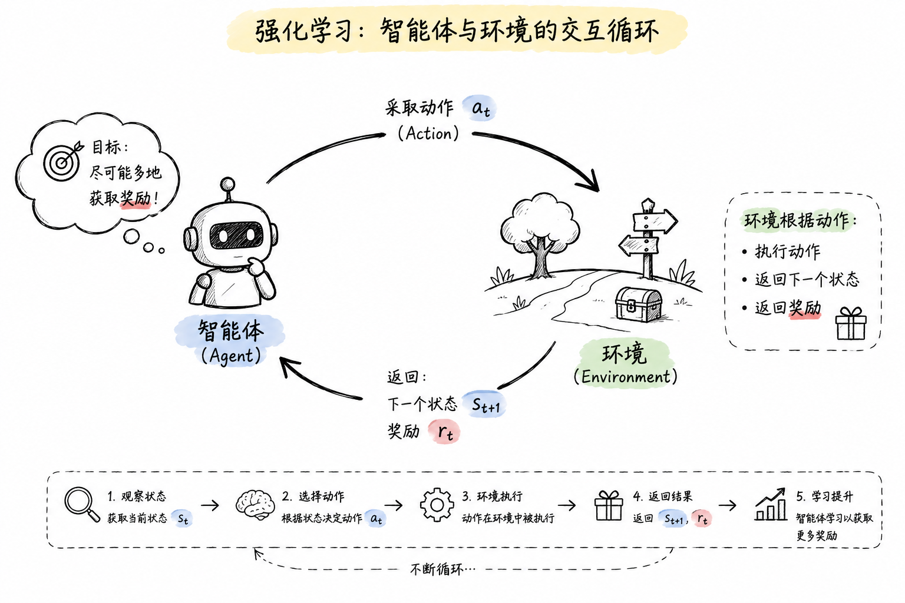
如上图，强化学习由两部分组成：智能体和环境。
- 🤖 智能体（Agent）：负责思考和行动，比如机器人、自动驾驶汽车、LLM
- 🌍 环境（Environment）：智能体所处的世界，比如游戏、真实道路、数学题、用户。
强化学习的过程就是智能体和环境不断交互的过程：Agent 根据当前状态选择动作，Environment 执行动作并返回新状态和奖励，Agent 利用奖励不断调整自己的策略，最终学会在各种状态下做出能够获得长期最大累计奖励的决策。
下图是一个 RL 经典的场景——倒立摆，在这个环境中，推车就是 Agent，它的输入 State 由推车位置、速度、木杆角度、木杆角速度构成，它能够执行的动作是向左推和向右推。
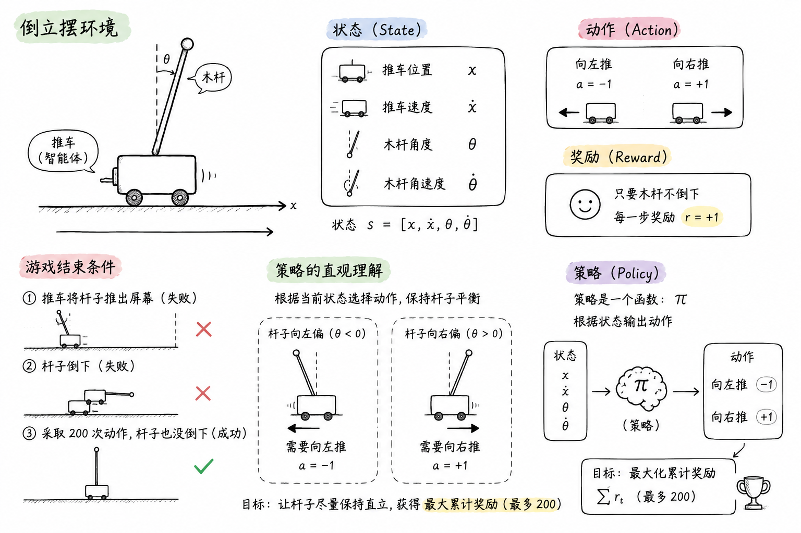
策略：本质上是一个函数，输入当前状态，输出的实际上是当前采取行动的概率分布，之后和 llm 一样，采取特定的采样策略采样即可：
通常，这个 \(\pi\) 由于很复杂，所以通常用神经网络来拟合，这也就是深度强化学习。
轨迹：轨迹（Trajectory）是指智能体在一个完整的回合（Episode）中与环境进行交互的完整记录序列，记作 \(τ\) （读作"掏"）。而一个回合就是当前环境状态 \(S_0\)、推车采取动作 \(A_0\) ，然后获得奖励 \(R_0\)，然后转移到下一时间步，直到出发结束条件位置。
RL 马尔可夫决策过程
一、为什么需要 MDP
RL 第一节画的是流程图——智能体选动作、环境给奖励、再选动作……这个图形象但不严谨。要精确地谈"价值函数"、"最优策略"，必须先把"环境"形式化成一个数学对象。
MDP（Markov Decision Process，马尔可夫决策过程）就是 RL 的数学底座——所有价值函数、Q-learning、PPO 都站在它上面。一句话：没有 MDP 这个形式化框架，价值函数根本无从定义——后面会看到，Bellman 方程里那个 \(p(s', r \mid s, a)\) 就是 MDP 五元组里的 \(P\)。
二、什么是 MDP
MDP 是一个五元组 \((S, A, P, R, \gamma)\)，用来完整描述"环境"：
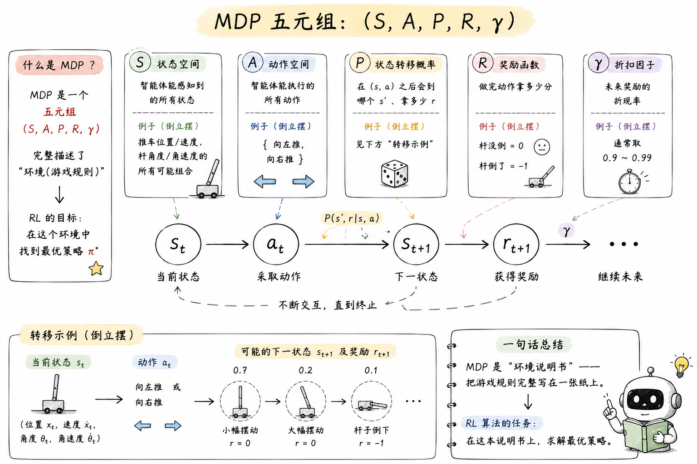
一句话：MDP 是"环境说明书"——把"游戏规则"完整写在一张纸上。RL 算法的任务，就是在这个说明书上求解最优策略。
三、马尔可夫性质 ⭐⭐⭐
MDP 最核心、最容易被忽略的假设——马尔可夫性质（Markov Property）：
读法：下一状态只取决于"当前" \((s_t, a_t)\)，跟"历史"无关。
3.1 直觉：现在足够决定未来
- 正例（满足马尔可夫）：围棋——给定当前棋盘布局，棋局怎么发展跟之前怎么下的无关；倒立摆——给定当前 \((位置, 速度, 角度, 角速度)\)，下一时刻的物理状态由牛顿力学唯一决定
- 反例（不严格满足）：自动驾驶——只看"当前车速"判断安全不够，需要"过去 5 秒的速度变化"；扑克牌——需要记住出牌历史
为什么是"反例"：因为只给"当前状态"无法预测未来——马尔可夫性质不成立。
现实世界怎么办
现实问题严格来说几乎都不满足马尔可夫性。处理办法是把状态定义得"足够丰富"——把历史信息塞进状态里。比如把"过去 5 帧画面"打包成当前状态。
如果实在塞不下（比如智能体只能看到部分信息），那就要用 POMDP（Partially Observable MDP，部分可观察 MDP）——那是更复杂的扩展，这里不展开。
3.2 为什么必须有这个假设
简短回答：没有它，"状态转移概率 \(p\)"这个概念都不存在。
- 想象一下：如果 \(s_{t+1}\) 还跟 \(s_{t-1}\) 有关，那"在 \((s_t, a_t)\) 之后到 \(s_{t+1}\)"的概率就没法定义——因为答案取决于"再往前看多少"
- 没有 \(p\)，价值函数的定义就不唯一——同一个 \(s\) 因为历史不同可能价值不同，那 \(V(s)\) 没法写成只以 \(s\) 为条件的函数
所以马尔可夫性质是整个价值函数理论的承重墙。这一点在 Sutton 教科书里讲得很重，但很多人学 RL 时直接跳过去了。
四、状态转移概率 P ⭐⭐⭐
\(P\) 是 MDP 最核心的数学对象——它编码了"环境动力学"，是 RL 算法试图理解（或绕过）的对象。
4.1 标准形式
- 输入：当前 \((s, a)\)
- 输出：下一时刻 \((s', r)\) 的联合概率
4.2 为什么 \(p\) 联合写 \((s', r)\) 而不是只写 \(s'\)
奖励 \(R_{t+1}\) 通常跟 \(s'\) 强相关（比如到达终点 \(s'\) 一定拿 +1）。强行拆成"先 \(p(s'|s,a)\) 再 \(p(r|s,a,s')\)"反而人为割裂了两者的耦合。联合写数学上更简洁，也是教科书的标准做法。
4.3 几个有用的派生量
（仅状态转移本身，把 \(r\) 求和掉）
（期望奖励——经常作为 MDP 的"简化奖励"使用）
后续价值函数章节中所有 \(p(s', r \mid s, a)\) 都指这个量。
五、奖励函数 R
\(R\) 告诉智能体"什么算好、什么算坏"。常见形式：
- \(R(s, a, s')\)：在 \(s\) 做 \(a\) 到 \(s'\)，拿多少分
- \(R(s, a)\)：在 \(s\) 做 \(a\)（不考虑结果）
- \(R(s)\)：仅看状态
在五元组定义里，\(R\) 通常通过 \(p(s', r \mid s, a)\) 中的 \(r\) 体现——拿到哪个 \(r\) 是概率事件。
5.1 奖励设计是 RL 的艺术
奖励函数设计错了，智能体会"钻空子"——这就是著名的 reward hacking。
经典反例：海岸赛艇游戏（CoastRunners），奖励 = "撞到目标"得分。结果智能体学会在原地反复撞同一个目标刷分，不跑完赛道。OpenAI 专门写过一篇博文 Faulty Reward Functions in the Wild 总结这类问题。
一个工程经验
奖励函数宁简勿巧。复杂的奖励 shaping 经常引发意想不到的 exploit 行为，调试成本远高于想象中"加点引导"的好处。
六、策略 π（5 行回顾）
智能体在 MDP 上怎么动完全由策略 \(\pi\) 决定。第一节已经讲过，这里做个对齐：
- 确定性策略：\(a = \pi(s)\)——状态确定、动作确定
- 随机性策略：\(\pi(a \mid s)\)——状态确定、动作是概率分布
- 复杂环境（围棋、LunarLander）下 \(\pi\) 通常用神经网络拟合——这就是深度强化学习
注：策略的完整定义见 [[07_Reinforcement_Learning#RL 基本概念]]。
七、MDP 框架下的轨迹
把五元组装起来，一条完整轨迹是：
每一步的产生机制：
| 元素 | 来源 |
|---|---|
| \(S_0\) | 环境初始化 |
| \(A_t\) | 智能体按 \(\pi(a \mid s)\) 采样 |
| \(S_{t+1}, R_{t+1}\) | 环境按 \(p(s', r \mid s, a)\) 采样 |
一条轨迹的联合概率可以写成：
第一项 \(p(s_0)\) 来自环境，后两项乘积正好就是"智能体 × 环境"——这就是 RL 的全部故事。
八、MDP 的求解目标
给一个 MDP \((S, A, P, R, \gamma)\)，RL 的任务是求最优策略 \(\pi^*\)，使得：
但这里有个根本问题：怎么评估"策略有多好"？ 总不能跑一万次看平均奖励——既不高效也不通用。
这就是价值函数登场的理由：用数学的方式直接评估一个策略。下一节就讲这个。
九、MDP 和 RL 的关系
最后澄清一个常见的混淆：
| 维度 | MDP | RL |
|---|---|---|
| 本质 | 问题的数学模型 | 求解 MDP 的方法学 |
| 假设 | \(P\) 和 \(R\) 已知 | \(P\) 和 \(R\) 未知（或部分未知） |
| 求解 | 规划算法（值迭代、策略迭代） | 通过与环境交互"试错"学习 |
| 经典工具 | 动态规划 | Q-learning、Policy Gradient |
两个范式：
- Model-based RL：先学/已知 \(P\) 和 \(R\)，再用规划算法求最优。样本效率高，但建模不准会引入误差
- Model-free RL：不管 \(P\)、\(R\) 是什么，直接学策略/价值（Q-learning、PPO、REINFORCE）。简单粗暴，但样本效率低
一句话总结
MDP 告诉你"环境长什么样"，RL 告诉你"在不知道环境长什么样的情况下怎么玩"。 所有价值函数、Q-learning、PPO 都是"在 MDP 框架下、Model-free 地逼近最优策略"。
RL 价值函数 ⭐⭐⭐
一、为什么需要价值函数
价值函数要回答的核心问题是：给定一个策略，怎么算它"有多好"？
更具体一点：智能体站在状态 \(s\)，每一步拿到的奖励 \(R_t\) 只是"眼前的蝇头小利"，它不能直接告诉智能体"在状态 \(s\) 我该不该行动"、"在状态 \(s\) 该做哪个动作 \(a\)"。
于是需要一个东西来算账——把"未来能拿到的总奖励"做一个期望估计，压缩成一个数字，写在状态/动作头上。这个东西就是价值函数（Value Function）。
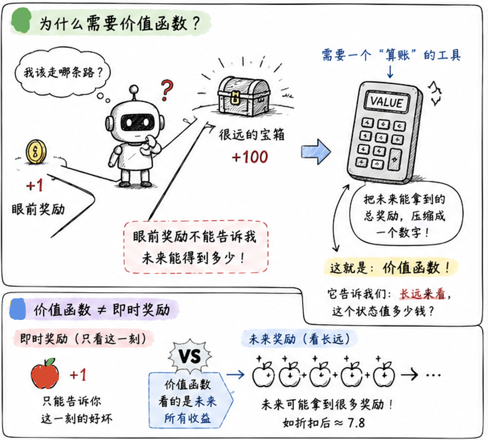
二、状态价值函数 V_π(s)
状态价值函数（state-value function）\(V_\pi(s)\) 定义为：在策略 \(\pi\) 下，从状态 \(s\) 出发所能获得的期望回报（expected return）。
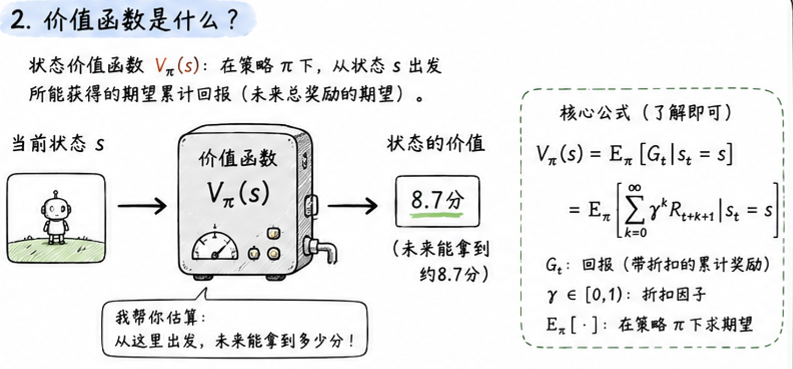
其中：
- \(G_t\) 叫回报（return），是带折扣的累计奖励
- \(\gamma \in [0, 1)\) 是折扣因子（discount factor），衡量"现在 vs 未来"的权重
- \(\mathbb{E}_\pi[\cdot]\) 表示"在策略 \(\pi\) 下求期望"
2.1 为什么需要折扣因子 \(\gamma\)
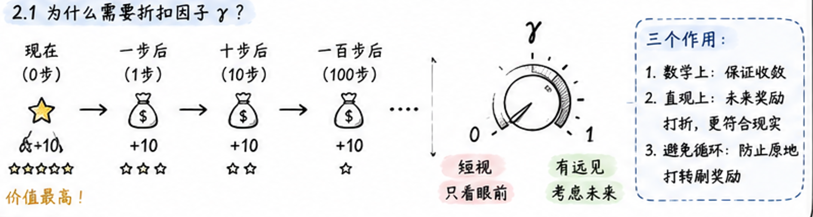
三个作用：
- 数学上：保证无穷时间步下的累计奖励有限（几何级数收敛）
- 直观上：眼前的奖励 \(R_{t+1}\) 比 \(R_{t+100}\) 更有"实感"——迟到 100 步的奖励打个折
- 避免循环：如果所有奖励都是正数，没有 \(\gamma\) 智能体可能"原地打转"刷奖励
\(\gamma\) 越接近 1 → 越"有远见"；越接近 0 → 越"短视"。
2.2 直觉：状态也是分"贵贱"的
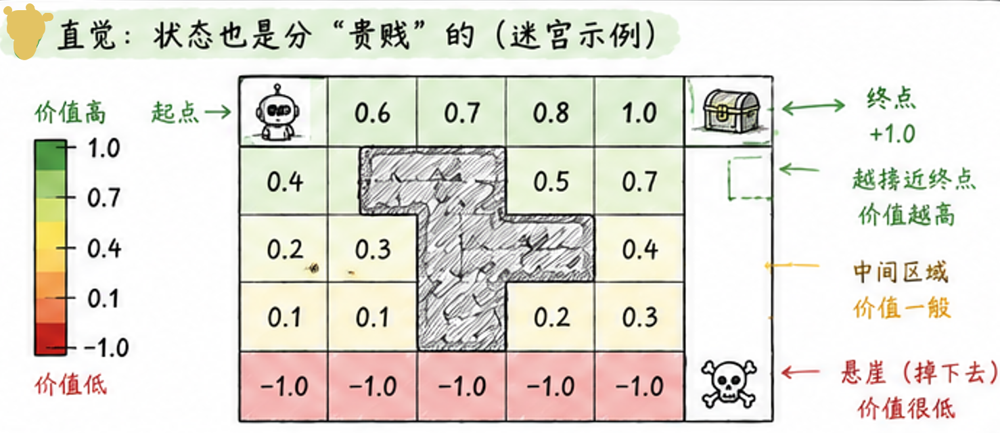
以迷宫游戏为例：
- 终点格 = +1（值 1.0）
- 起点格 ≈ +0.6（要走 4 步才能到终点，每步折扣 0.9）
- 离悬崖越近 ≈ +0.1（随时可能掉下去）
- 悬崖格 ≈ -1（掉下去就 game over）
\(V_\pi(s)\) 实质上是在告诉智能体"站在这个格子，长期来看能拿多少分"——它是状态空间的"评分卡"。
三、动作价值函数 Q_π(s,a)
动作价值函数（action-value function）\(Q_\pi(s, a)\) 定义为：在状态 \(s\) 采取动作 \(a\) 之后再按策略 \(\pi\) 走，能获得的期望累计回报。
对比一下：
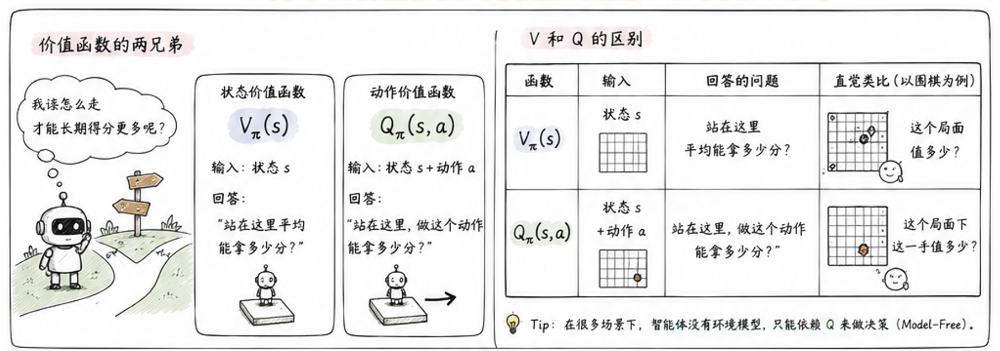
直觉：以围棋为例，\(V_\pi(s)\) 告诉你"这个局面值多少"；\(Q_\pi(s, a)\) 告诉你"这个局面下这一手值多少"——前者是状态评分，后者是动作评分。
为什么 Q 比 V 更重要
在很多场景下，智能体做决策时只能依赖 Q：因为它没有"环境模型"，不知道 \(a\) 之后会到哪个 \(s'\)。这就是著名的Model-Free 设置，也是 Q-learning 这类算法的立足点。
四、贝尔曼方程（Bellman Equation）
价值函数最关键的性质是递归：当前状态的价值，可以用下一状态的价值表示。这个递推关系就是 Bellman 方程，是几乎所有 RL 算法的根。
4.1 V 形式的贝尔曼方程
把 \(G_t\) 拆成"第一步奖励 + 之后的折扣"：
读法：\(V_\pi(s)\) = 在状态 \(s\) 用策略 \(\pi\) 选动作 \(a\) → 进入 \(s'\) 拿立即奖励 \(r\) → 加上折扣后的下一状态价值。
4.2 Q 形式的贝尔曼方程
4.3 备份图（Backup Diagram）
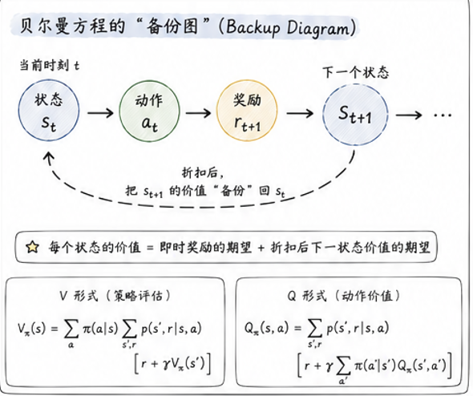
之所以叫"备份图"（backup diagram）：每个圆点（状态）的价值，是从下一时间步往回"备份"——综合所有可能的 \((a, s', r)\) 加权求和得到。这张图能解释几乎所有 DP 类和 TD 类算法的"信息流向"。
一句话总结 Bellman 方程
当前价值 = 即时奖励的期望 + 折扣后下一状态价值的期望。 本质是把"无穷级数求和"用"递推"代替，复杂度直接从 \(O(T)\) 降到 \(O(1)\) 一步。
五、V 和 Q 的关系
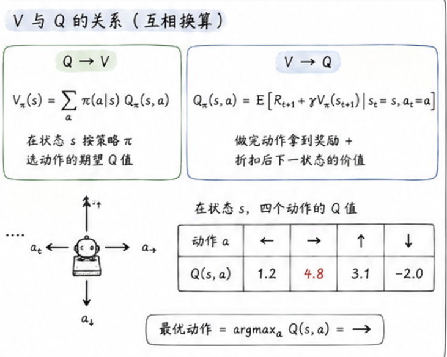
两个价值函数之间可以互相换算，记住这两条式子就够用：
读法：
- Q → V：状态价值是"在状态 \(s\) 按策略 \(\pi\) 选动作"的期望 Q 值
- V → Q：动作价值是"做完动作拿到的奖励 + 折扣后下一状态的价值"
速记法
状态不挑动作 → 用 \(V\)；状态挑了动作 → 用 \(Q\)。挑不挑动作，差一条 \(\pi(a|s)\)。
六、最优价值函数 V 和 Q
智能体的终极问题不是"在某个固定策略下值多少"，而是"最优情况下能值多少"。
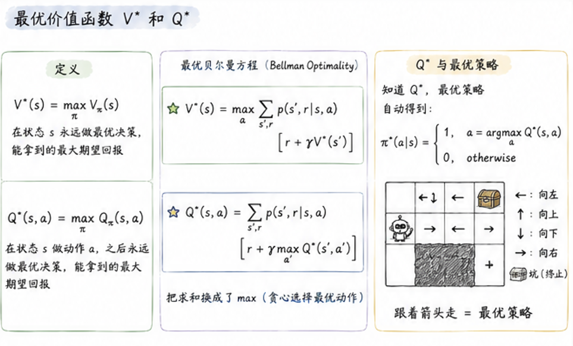
6.1 定义
- \(V^*(s)\)：在状态 \(s\) 永远做最优决策，能拿到的最大期望回报
- \(Q^*(s, a)\)：在状态 \(s\) 做动作 \(a\)、之后永远做最优决策，能拿到的最大期望回报
6.2 最优贝尔曼方程（Bellman Optimality Equation）
唯一区别是把求和换成了 \(\max\)。这两条式子是所有 value-based 算法的理论基础——DQN、Double DQN、Dueling DQN 都在试图逼近这个 \(\max\)。
6.3 Q* 与最优策略
知道 \(Q^*\) 之后，最优策略一句话就能写出来：
这就是为什么 Q-learning 这类算法的目标那么明确：只要学出 \(Q^*\)，策略自动出来。
七、优势函数 A(s,a)
优势函数（advantage function）衡量的是"在状态 \(s\) 下，做动作 \(a\) 比平均好多少"：
- \(A > 0\)：这个动作比平均水平好，应该鼓励
- \(A < 0\)：这个动作比平均水平差，应该抑制
- \(A = 0\)：和平均水平一样
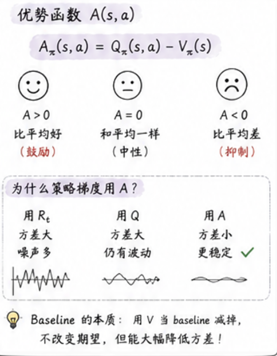
为什么 PPO/A2C 这些算法都离不开 A
在策略梯度中：
- 用 \(R_t\)（原始奖励）：方差大、噪声多
- 用 \(Q\)（动作价值）：包含 baseline，方差大
- 用 \(A\)（优势）：扣掉了 baseline，方差最小
Baseline 的本质
把 V 当 baseline 减掉，并不会改变梯度的期望（数学上是无偏的），但能大幅降低方差。这是 RL 中最重要的方差缩减技巧之一。
八、价值函数到底有什么用
最后盘一下，价值函数在 RL 体系里扮演的三个角色：
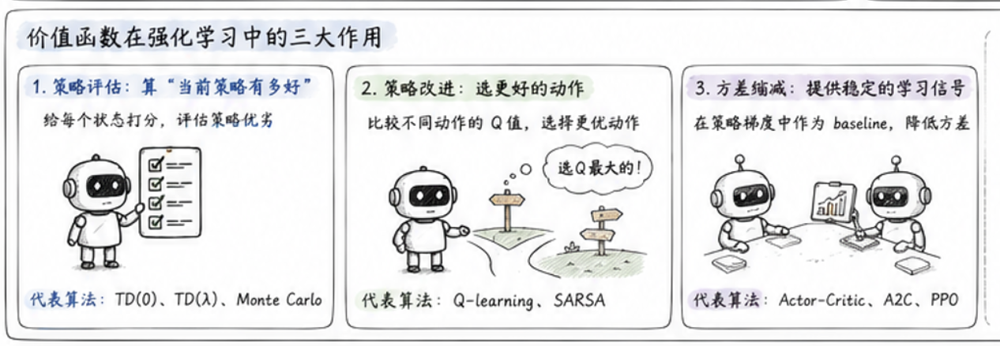
扩展阅读
- Sutton & Barto,《Reinforcement Learning: An Introduction》 第 3 章（必读神书）
- Spinning Up — Key Concepts in RL（OpenAI 的 RL 入门）
- [[Reinforcement Learning]] 中其他章节（MDP、策略梯度等）
RL 策略梯度法 ⭐⭐⭐
原始策略梯度法
原始梯度策略法尽管无法保证我们的优化目标 \(J(\theta)\) 在每次更新后稳定上升，但是它的出现也解决了几个核心问题：优化目标是什么，优化目标的梯度怎么去计算等，又因为优化目标的梯度是一个期望，这个期望怎么去近似的得到
一、问题的设定：策略是一个神经网络
在 RL 里，我们唯一能"动"的就是策略。环境动力学 \(P\)、奖励函数 \(R\)，都不是我们能改的。剩下能改的，就是 \(\pi\)。
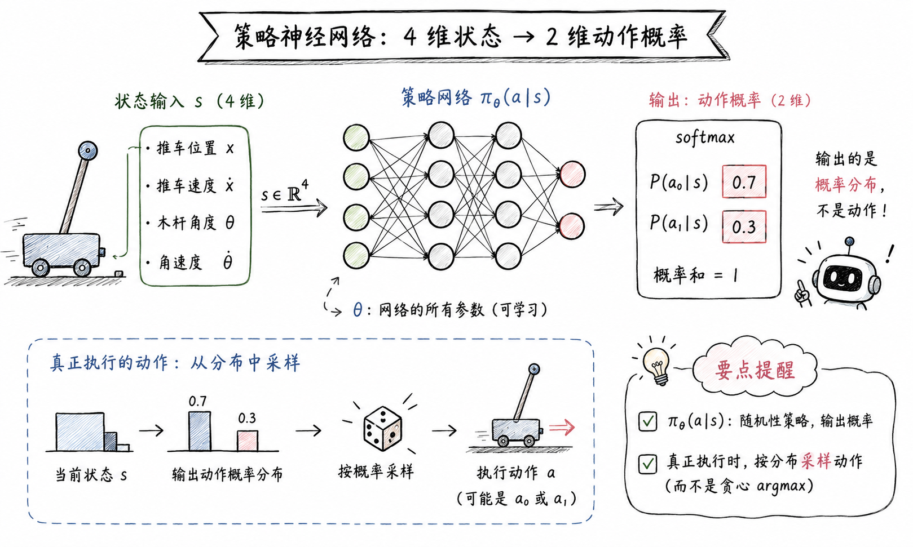
现代做法：把策略建模成一个神经网络 \(\pi_\theta(a|s)\)，\(\theta\) 是网络的所有权重。倒立摆例子：
- 输入 \(s\)：4 维（推车位置、速度、木杆角度、角速度）
- 输出：2 个动作的概率，softmax 归一化（比如 [0.7, 0.3]）
这里要分清两个角色：
- \(\pi_\theta(a|s)\)：随机性策略——给状态，输出"采到每个动作的概率"
- 真正执行的动作 \(\sim \pi_\theta\)：从分布里采样出来（贪心 argmax 不是 RL 的玩法）
一句话：策略网络不直接给动作，而是给动作的概率分布；真正跑游戏时按分布采样。
二、目标函数 J(θ) ⭐⭐⭐
策略网络 \(\pi_\theta\) 有了，那"策略好不好"怎么衡量？
目标函数 \(J(\theta)\) 给出答案：
其中：
- \(\tau = (S_0, A_0, R_0, S_1, A_1, R_1, \dots)\)：一条轨迹
- \(G(\tau) = \sum_{t=0}^{T} \gamma^t R_t\)：整条轨迹的带折扣的累计回报
- 下标 \(\tau \sim \pi_\theta\)：轨迹是用当前策略采出来的
读法：\(J(\theta)\) = 在策略 \(\pi_\theta\) 下采样很多条轨迹，每条算一个 \(G(\tau)\)，求平均——这就是这个策略"平均能拿多少分"。
两个常被忽略的细节：
- \(J(\theta)\) 是关于 \(\theta\) 的函数——一旦 \(\theta\) 变了，整个轨迹分布就变了
- 我们的目标：\(\arg\max_\theta J(\theta)\)——找一组参数让平均回报最大
三、策略梯度定理 ⭐⭐⭐
目标有了：\(\max_\theta J(\theta)\)。最自然的办法——梯度上升。
3.1 难点：J(θ) 没法直接求导
直接对 \(J(\theta) = \mathbb{E}_{\tau \sim \pi_\theta}[G(\tau)]\) 求 \(\nabla_\theta\) 会卡住：
这里 \(\Pr(\tau; \theta)\) 是轨迹出现的概率（前面 MDP 章节讲过，\(p(\tau) = p(s_0) \prod \pi_\theta \cdot p\)），它通过策略间接依赖 \(\theta\)。直接对求和里的概率求导数学上能写，但实践上没法高效算。
最朴素的想法：让"出现过的、回报高的轨迹"的概率上升。但怎么"上升"——这是 log 技巧登场的地方。
3.2 log 梯度技巧：一行讲透
对一个概率分布 \(p_\theta(x)\)：
3.3 定理陈述
把 log 技巧套到轨迹上，经过几步推导（见下方折叠框），得到策略梯度定理：
推导细节（点击展开）
3.4 直觉：让好的动作概率上升
公式 \(\nabla_\theta J = \mathbb{E}[G(\tau) \cdot \nabla_\theta \log \pi_\theta(a|s)]\) 看似抽象，翻译成人话：
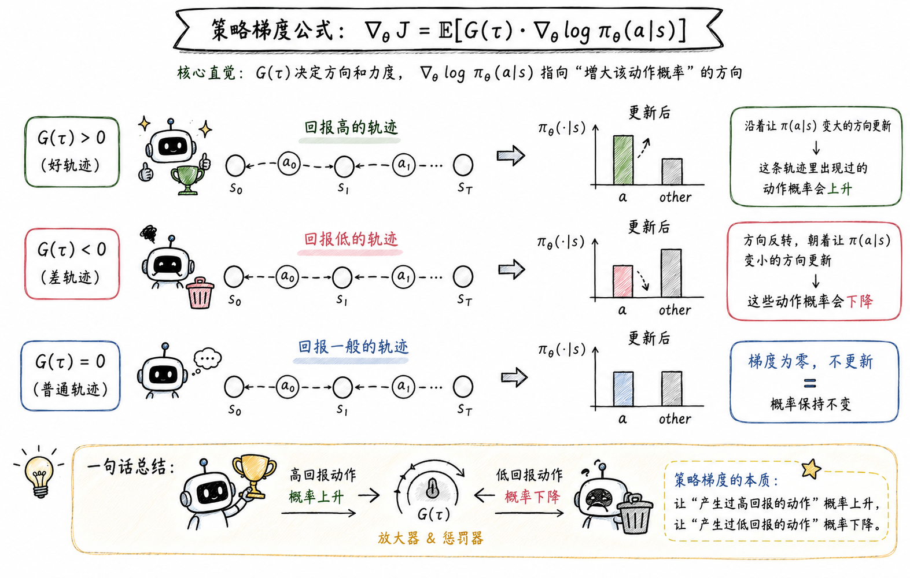
- \(G(\tau) > 0\)（好轨迹）：\(\nabla_\theta \log \pi(a|s)\) 沿"让 \(\pi(a|s)\) 变大"的方向走——这条轨迹里出现过的动作概率会上升
- \(G(\tau) < 0\)（差轨迹）：方向反转——这些动作概率会下降
- \(G(\tau) = 0\)（普通）：梯度为零，不更新
一句话：策略梯度的本质——让"产生过高回报的动作"概率上升，让"产生过低回报的动作"概率下降。\(G(\tau)\) 既是放大器也是惩罚器。
四、蒙特卡洛近似：采一条轨迹 ⭐⭐
策略梯度定理是个期望——这个期望大部分情况下没法直接算。怎么办？
大数定律：采 \(n\) 条轨迹，把每条轨迹的项加起来取平均。
最朴素版本：\(n=1\)——采一条轨迹就更新一次：
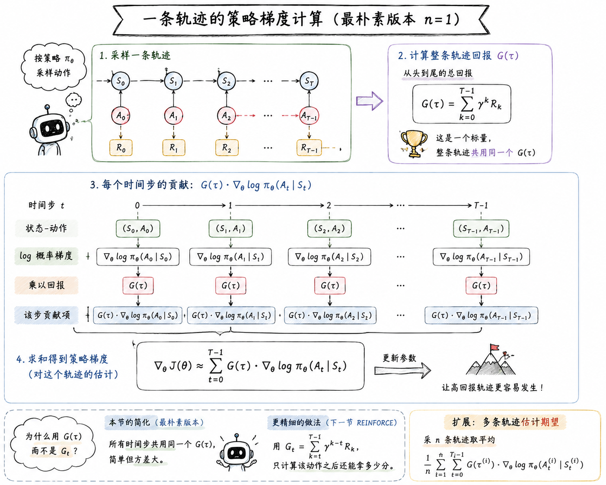
这就是原始策略梯度法的全部数学——采一条轨迹、算出 \(G(\tau)\)、对 \(\log \pi\) 加权求和、更新参数。
为什么这里用 \(G(\tau)\) 而不是 \(G_t\)：朴素版偷了个懒——所有时间步共用同一个 \(G(\tau)\)。理论上更精细的做法是用 \(G_t = \sum_{k \geq t} \gamma^{k-t} R_k\)（"从这个动作之后能拿多少分"），但那是下一节 REINFORCE 的事。这一节先接受这个简化。
五、代码实现（PyTorch 版本）
理论落地到代码就 4 块：
5.1 策略网络
# 策略神经网络的定义
class Policy(nn.Module):
def __init__(self):
super().__init__()
self.l1 = nn.Linear(4, 128) # 推车环境中，状态是一个四维向量
self.l2 = nn.Linear(128, 2) # 输出两个动作，左转和右转
# x是一个带batch的张量: [batch_size, dim]
def forward(self, x):
x = F.relu(self.l1(x))
x = F.softmax(self.l2(x), dim=-1)
return x
5.2 定义 Agent
class Agent:
def __init__(self):
self.gamma = 0.9 # 折扣因子
self.lr = 0.0002 # 学习率
self.action_size = 2 # 动作空间
self.pi = Policy(self.action_size) # 当前 Agent 的大脑：策略网络
self.optimizer = torch.optim.Adam(self.pi.parameters(), lr=self.lr)
# 输入环境状态，输出动作
def get_action(self, state):
# state 是一个一维张量，所以传入 pi 之前，添加批次维度
probs = self.pi(state.unsqueeze(0)).squeeze(0) # [action_size, ]
# 根据动作的概率创建一个概率分布
m = Categorical(probs)
# 采样得到概率分布 𝜋𝜃(𝑎𝑡|𝑠𝑡)
action = m.sample()
# 返回一个元组（动作，动作概率分布）
return action, probs
# 采集一条轨迹的详细数据
# 采集一条轨迹的详细数据
def collect_trajectory(self, env):
state, _ = env.reset()
states, actions, rewards = [], [], []
done = False
while not done:
action, _ = self.get_action(state)
next_state, reward, terminated, truncated, _ = env.step(action.item())
done = terminated or truncated
states.append(state) # s_t
actions.append(action) # a_t
rewards.append(reward) # r_t
state = next_state # s_{t+1}
return states, actions, rewards
5.3 更新策略
class Agent:
#...（接5.2代码）
# 更新策略
def update(self, trajectory):
states, actions, rewards = trajectory
# 逆序计算 G(r)
G = 0
for r in rewards[::-1]:
G = r + self.gamma * G
# 计算策略网络的损失函数
loss = 0
for s, a in zip(states, actions):
probs = self.pi(torch.tensor(s).unsqueeze(0)).squeeze(0)
log_probs = torch.log(probs[a])
loss += -log_probs * G
# 下面是并行版本，也就是多了批次信息
# states = torch.tensor(states)
# actions = torch.tensor(actions).view(-1, 1)
# log_probs = torch.log(self.pi(states).gather(1, actions))
# loss = -torch.sum(log_probs) * G
# 优化策略网络
self.optimizer.zero_grad()
loss.backward()
self.optimizer.step()
5.4 训练循环
# 训练 agent
import gymnasium as gym
env = gym.make('CartPole-v0')
agent = Agent()
return_list = []
episode_list = []
for i_episode in range(1000):
# 采集一条轨迹
trajectory = agent.collect_trajectory(env)
reward_list = trajectory[2]
return_list.append(sum(reward_list))
episode_list.append(i_episode)
# 更新策略
agent.update(trajectory)
if i_episode % 100 == 0:
print("回合:{}, 总奖励:{:.1f}".format(i_episode, sum(reward_list)))
代码与公式的对应
policy(s)：\(\pi_\theta(\cdot|s)\)probs[0, a]：\(\pi_\theta(A_t \mid S_t)\)loss = -log_prob * G：恰好是 \(-G(\tau) \log \pi_\theta(A_t|S_t)\)，对loss做梯度下降 = 对 \(J\) 做梯度上升
六、原始梯度策略法的局限
原始策略梯度能跑通——倒立摆 1000-3000 个 episode 就能学会平衡。但是它无法保证我们的优化目标 \(J(\theta)\) 稳定上升，主要有 3 个明显问题：
G(τ) 噪声极大
\(G(\tau)\) 来自整条轨迹的实际回报——它把"运气"也算进去了。同时我们只用了一条轨迹的 \(G(\tau)\) 去近似期望值，所以误差就是会很大。
例子：同样一个"向左推"，第一次正好避开了悬崖拿了 +200，第二次运气差掉进悬崖拿了 -50。两次更新的方向完全相反——但策略可能根本没变。
直觉上：\(G(\tau)\) 的大波动会让更新方向抖得很厉害，训练曲线剧烈震荡。
所有时间步共用同一个 G(τ)
朴素版里，整条轨迹所有 \(t\) 用的都是同一个 \(G(\tau)\)——但动作的好坏应该用"它之后的回报"来评价，不是整条轨迹的回报。
一个在 \(t=199\) 的动作好不好，跟 \(t=0\) 的动作好不好是两件事——但朴素版把它们的"分数"标成同一个 \(G(\tau)\)。
G(τ) 太大太小都会崩
- \(G(\tau) = +1000\)：梯度步长 \(\alpha \cdot G \cdot \nabla\log\pi\) 巨大，参数可能飞出合理范围
- \(G(\tau) = -1000\)：反方向一步飞出去
- 极端情况：策略崩溃——刚学会的策略被一次极端奖励彻底打乱
三个问题的共同根源
三个问题其实是一回事——\(G(\tau)\) 本身方差太大。
下一节我们要做的核心改动只有一件：给 \(G(\tau)\) 减方差。最经典的做法就是加 baseline——把 \(G(\tau)\) 减去一个跟状态有关、跟动作无关的"基线分数"。数学上无偏、方差大降。带着这个钩子，进入 REINFORCE 和带基线的 REINFORCE。
REINFORCE
在原始策略梯度法里，整条轨迹所有 \(t\) 用的都是同一个 \(G(\tau)\)——但动作的好坏应该用"它之后的回报"来评价，不是整条轨迹的回报。REINFORCE 就是把原始策略梯度法里的 \(G(\tau)\) 换成了 \(G(t)\):
其中，\(G(t)\) 为：
代码实现上，与原始策略梯度法变化不大，只在计算损失的时候，将 \(G(\tau)\) 换成了 \(G(t)\)
class Agent:
...
# 更新策略
def update(self, trajectory):
states, actions, rewards = trajectory
loss, G = 0, 0
for s, a, r, in zip(states[::-1], actions[::-1], rewards[::-1]):
G = r + self.gamma * G # 逆序计算 G(t)
log_prob = torch.log(self.pi(torch.tensor(s).unsqueeze(0))).squeeze(0)[a]
loss += -log_prob * G # 当前时间步的损失贡献
# 优化策略网络
self.optimizer.zero_grad()
loss.backward()
self.optimizer.step()
带基线的策略梯度法
REINFORCE 把 \(G(\tau)\) 换成了 \(G_t\)，但仍然有一个大问题：\(G_t\) 的方差很大。一次采样的 \(G_t\) 是"真实动作值 + 随机噪声"——噪声大，更新方向就抖。Baseline 就是来降方差的。
一、核心直觉：减去"这个状态的平均分" ⭐⭐
Baseline 的做法：给每个状态 \(s_t\) 设一个基准分 \(b(s_t)\)，用它去减 \(G_t\)：
- \(G_t - b(s_t) > 0\)：这个动作比 \(s_t\) 下的平均表现好 → 上调概率
- \(G_t - b(s_t) < 0\)：比平均差 → 下调概率
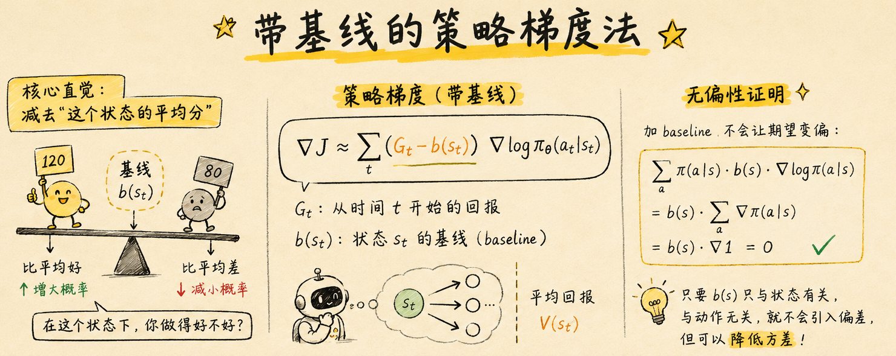
二、无偏性证明（一行数学）⭐⭐
加 baseline 不会让期望变偏，因为：
结论：任何只跟状态 \(s\) 有关、跟动作 \(a\) 无关的函数 \(b(s)\)，作为 baseline 加到梯度公式里，期望值完全不受影响，但方差可以降低。
三、最优 baseline = V(s) ⭐⭐
理论分析表明，能使方差降到最低的 baseline 正是状态价值函数 \(V^\pi(s)\)。
此时：
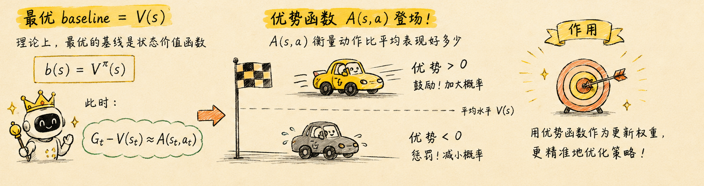
这是 \(A(s,a)\)（优势函数）第一次在实际算法里登场——前面价值函数章节定义过它，现在它的作用清楚了：作为策略梯度更新的权重，告诉策略每个动作"比平均好多少"。
四、代码改动
与 REINFORCE 只在 update 方法里多了一步——减去 baseline：
def update(self, trajectory):
states, actions, rewards = trajectory
loss, G = 0, 0
# 估计 baseline：这条轨迹中 G_t 的均值近似 V(s)
returns = []
for r in rewards[::-1]:
G = r + self.gamma * G
returns.insert(0, G)
baseline = np.mean(returns) # 简单 baselines
for s, a, r, G in zip(states, actions, returns):
# log_prob = ...
loss += -log_prob * (G - baseline) # 减去 baseline！
self.optimizer.zero_grad()
loss.backward()
self.optimizer.step()
修改只有一处：loss += -log_prob * G → loss += -log_prob * (G - baseline)。
更精细的做法
上面用轨迹内 \(G_t\) 的均值当 baseline，零成本但粗糙。更好的方案是用一个独立的神经网络 \(V_\phi(s)\) 来学 baseline，每步都能输出一个"状态分数"。这正是下一节 Actor-Critic 的核心思想——\(V_\phi(s)\) 就是 Critic。
Actor-Critic
一、核心思想：两个网络各司其职 ⭐⭐
前面带 baseline 的 REINFORCE 已经引入了 \(V(s)\)，但那个 \(V(s)\) 要么用轨迹内均值近似，要么独立训练但仅在 episode 结束后才更新。Actor-Critic 的最大改进是：让 \(V(s)\) 变成一个可每步更新的神经网络，与策略网络交替训练。
名称本身就是架构的答案：
- Actor（演员） = 策略网络 \(\pi_\theta(a|s)\)，负责"演"——根据当前状态输出动作
- Critic（评论家） = 价值网络 \(V_w(s)\)，负责"评"——给 Actor 的每个动作打分
两者的关系：Actor 演一出戏，Critic 打分；Actor 根据分数调整演技，Critic 也同步提升自己的评判水平。
从带 baseline 的 REINFORCE 到 Actor-Critic，公式层面的变化只有一处——baseline 不再是用完就扔的临时值，而是一个可学可更新的神经网络：
但 \(G_t\) 仍然是 MC 回报——要跑完一个完整的 episode 才能算。Actor-Critic 真正的进化在下一步。
二、从 MC 到 TD：走一步就能更新 ⭐⭐
用 \(V_w(s_{t+1})\) 替代后续所有 \(R\) 的累计，本质是用网络对未来的预估去替换多步采样的随机累加——方差更低，代价是有偏（因为 \(V_w\) 还不够准）。
代入梯度公式：
括号里的 \(R_t + \gamma V_w(s_{t+1}) - V_w(s_t)\) 就是 TD error（时序差分误差），记作 \(\delta_t\)。这个 \(\delta_t\) 同时服务两个网络：
- 对 Critic：\(\delta_t\) 是监督信号——Critic 通过最小化 \(\delta_t^2\) 来更新 \(w\)，让 \(V_w\) 越来越准
- 对 Actor：\(\delta_t\) 取代 \(G_t - V(s_t)\) 作为梯度权重，指导策略更新
三、交替更新流程
每一时间步 \(t\) 的循环：
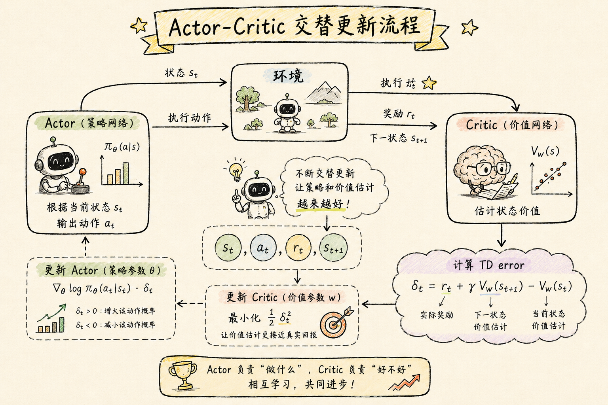
四、代码实现
4.1 策略与价值网络
class PolicyNet(nn.Module):
def __init__(self, action_size):
super().__init__()
self.fc1 = nn.Linear(4, 128)
self.fc2 = nn.Linear(128, action_size)
def forward(self, x):
x = f.relu(self.fc1(x))
x = f.softmax(self.fc2(x), dim=-1)
return x
# 预测的是状态价值，所以输出是一个标量
class ValueNet(nn.Module):
def __init__(self):
super().__init__()
self.fc1 = nn.Linear(4, 128)
self.fc2 = nn.Linear(128, 1)
def forward(self, x):
x = f.relu(self.fc1(x))
x = self.fc2(x)
return x
4.2 Agent
# 智能体
class Agent:
def __init__(self):
self.action_size = 2 # 动作空间
self.gamma = 0.9 # 折扣因子
self.lr_pi = 0.0002
self.lr_v = 0.0005
self.pi = PolicyNet(self.action_size)
self.v = ValueNet()
self.optimizer_pi = torch.optim.Adam(self.pi.parameters(), lr=self.lr_pi)
self.optimizer_v = torch.optim.Adam(self.v.parameters(), lr=self.lr_v)
def get_action(self, state):
# 得到动作概率分布
probs = self.pi(torch.tensor(state).unsqueeze(0)).squeeze(0)
m = Categorical(probs)
action = m.sample().item() # 当前动作，记得要 item 取出标量
return action, probs
def update(
self,
state,
action_prob,
reward,
next_state,
done
):
state = torch.tensor(state).unsqueeze(0) # 加上批次维度
next_state = torch.tensor(next_state).unsqueeze(0)
# target TD误差
# 1 - done，也就是如果当前是最后一步了，后面这一项就是0
target = reward + self.gamma * self.v(next_state) * (1 - done)
target = target.detach()
v = self.v(state)
# 状态价值网络的损失
loss_fn = torch.nn.MSELoss()
loss_v = loss_fn(v, target)
# 策略网络损失
delta = target - v
loss_pi = -torch.log(action_prob) * delta.detach().item()
# 更新策略网络
self.optimizer_pi.zero_grad()
loss_pi.backward()
self.optimizer_pi.step()
# 更新状态价值网络
self.optimizer_v.zero_grad()
loss_v.backward()
self.optimizer_v.step()
4.3 训练过程
import gymnasium as gym
env = gym.make("CartPole-v1")
agent = Agent()
return_list = []
episode_list = []
for episode in range(2000):
state, _ = env.reset()
done = False
total_reward = 0
while not done:
action, action_prob = agent.get_action(state)
next_state, reward, terminated, truncated, _ = env.step(action)
agent.update(state, action_prob[action], reward, next_state, terminated)
done = terminated or truncated
state = next_state
total_reward += reward
return_list.append(total_reward)
episode_list.append(episode)
if episode % 100 == 0:
print(f"Episode: {episode}, Reward: {total_reward}")
import matplotlib.pyplot as plt
plt.plot(episode_list, return_list)
plt.title = "CartPole-v1"
plt.xlabel("Episode")
plt.ylabel("Return")
plt.show()
效果如下：
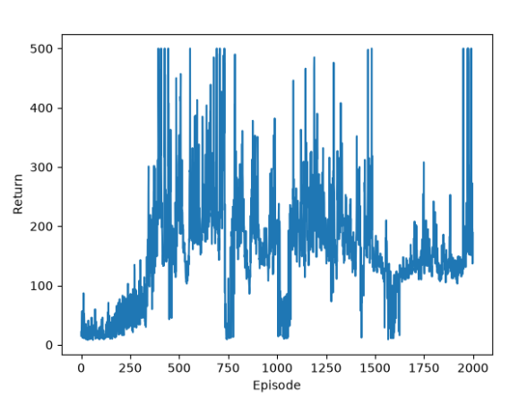
五、多步 TD 误差 ⭐
Actor-Critic 用 1 步 TD error \(\delta_t = R_t + \gamma V_w(s_{t+1}) - V_w(s_t)\)，但 1 步太短——\(V_w\) 不准时，单步信号噪声大。
多步 TD 走中间路线：往前走 \(n\) 步再用 \(V_w\) 做 bootstrap。
递推公式：
三种方法的对比：
| 方法 | 公式 | 方差 | 偏差 |
|---|---|---|---|
| 1 步 TD | \(R_t + \gamma V_w(s_{t+1})\) | 低 | 高 |
| \(n\) 步 TD | \(\sum_{k=0}^{n-1} \gamma^k R_{t+k} + \gamma^n V_w(s_{t+n})\) | 中 | 中 |
| MC | \(G_t = \sum_{k=0}^{T-t} \gamma^k R_{t+k}\) | 高 | 无 |
\(n\) 是超参数——步数越多，方差越接近 MC、偏差越接近 MC。实践中 \(n\) 取 3-5 或者用 Generalized Advantage Estimation (GAE)——把所有步长加权平均，一步到位。
实践惯例
A2C 默认用 5 步 TD；PPO 用 GAE 比单步效果好得多。
广义优势估计（GAE）
多步 TD 的 \(n\) 是个硬编码——不同时刻最优步长不一样。GAE 换了一种思路：不选一个 \(n\)，而是把所有 \(n\) 步优势估计按指数衰减加权平均。
一、从 1 步 TD error 到 GAE ⭐
先回顾 1 步 TD error：
多步展开后，不同步数的优势估计：
GAE 将它们指数加权平均：
化简后得到核心公式：
其中 \(\lambda \in [0,1]\) 是额外引入的衰减系数：
- \(\lambda = 0\)：\(A_t^{\text{GAE}} = \delta_t\) —— 退化为 1 步 TD
- \(\lambda = 1\)：\(A_t^{\text{GAE}} = \sum_{l=0}^{\infty} \gamma^l \delta_{t+l} = G_t - V(s_t)\) —— 退化为 MC
- \(0 < \lambda < 1\)：中间地带，走多远看 \(\lambda\) 多大
二、递推实现 ⭐⭐
核心公式是无穷级数，但实际实现用递推——算出所有 \(\delta_t\) 后逆序滚动：
实现步骤：
# 1. 前向：对每个 t 算 1 步 TD error
td_errors = []
for t in range(T):
delta = rewards[t] + gamma * V(states[t+1]) - V(states[t])
td_errors.append(delta)
# 2. 逆序：从最后一个时间步往前递推 GAE
gae = 0
advantages = []
for delta in td_errors[::-1]:
gae = delta + gamma * lam * gae # A_t^GAE = δ_t + γλ · A_{t+1}^GAE
advantages.insert(0, gae) # 插入到最前面，保持时间顺序
三、GAE 下的策略梯度
与 Actor-Critic 的唯一区别：梯度权重从 \(\delta_t\) 换成了 \(A_t^{\text{GAE}}\)。
实践惯例
PPO 几乎标配 GAE，\(\lambda\) 常用 0.95-0.99。相比单步 TD，GAE 让训练曲线更平滑、收敛更快。
策略梯度法总结
本章学到的所有策略梯度方法，共享一个统一的数学形式：
区别只在于权重 \(\Phi_t\)：
| # | 方法 | \(\Phi_t\) |
|---|---|---|
| 1 | 最简单的策略梯度法 | \(G(\tau)\)（整条轨迹的回报，所有 \(t\) 共用） |
| 2 | REINFORCE | \(G_t\)（时刻 \(t\) 之后的回报） |
| 3 | 带 baseline 的 REINFORCE | \(G_t - b(S_t)\)（减去状态基线） |
| 4 | Actor-Critic | \(\delta_t = R_t + \gamma V(S_{t+1}) - V(S_t)\)（1 步 TD error） |
| 5 | 广义优势估计（GAE） | \(A_t^{\text{GAE}}\)（多步 TD 的指数加权平均） |
\(\Phi_t\) 也叫优势函数（Advantage Function），文献中常记作 \(A(s,a)\)——它衡量的是在状态 \(s\) 下采取动作 \(a\)，比起"这个状态的平均表现"好多少。
延续与展望
从 (1) → (5)，每一步都在改进 \(\Phi_t\)——降低方差、减少偏差、引入可学习参数。强化学习中的很多"花活"本质上都是围绕 如何设计更好的 \(\Phi_t\) 展开的。比如 GRPO（Group Relative Policy Optimization）使用的组相对优势，就是对 \(\Phi_t\) 的另一种设计。
策略梯度法存在的问题
策略梯度法的更新公式很简单：\(\theta \leftarrow \theta + \alpha \nabla_\theta J(\theta)\)。
但学习率 \(\alpha\) 极其难调。步子迈太大，策略直接崩溃；迈太小，学不动。
1. 核心矛盾：训练数据依赖策略
为什么深度学习中这个问题没那么严重？因为数据集是固定的——不管参数怎么变，训练数据不变。
强化学习不同：每一轮采样的轨迹完全依赖当前策略。策略变了 → 采到的数据变了 → 梯度变了。这造成了正反馈的恶性循环：
- 一步走错 → 策略变差 → 采到的数据变差 → 梯度更歪 → 策略进一步恶化
- 从悬崖掉下去后，需要很长时间才能爬回来
2. 地形敏感：学习率无法适配所有区域
学习率无法适配所有区域，尤其是强化学习目标函数本身就是极度的凹凸，所以这个地方看着比较平坦，但可能前面就是悬崖，学习率稍微大点，直接跌入悬崖，之后再想回来，可就难了（原因可以用1解释）
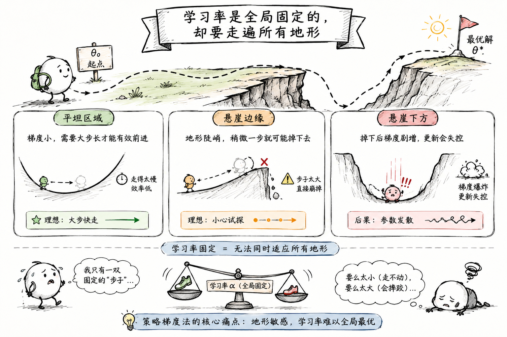
- 平坦区域：应该大步快走（但学习率固定，走太慢）
- 悬崖边缘：稍微一步就崩（但学习率固定，步子太大）
- 掉下悬崖后：梯度剧增，当前学习率引发爆炸式更新
3. 本质问题：新策略可能比旧策略差
策略梯度法完全无法保证新策略优于旧策略。PPO 的核心目标正是解决这个问题——让每一步更新都"安全"。
RL PPO ⭐⭐⭐
一、PPO 概述
PPO（Proximal Policy Optimization，近端策略优化）是目前强化学习中最经典、最稳定的策略梯度算法之一，由 OpenAI 于 2017 年提出。它最大的目标只有一句话：
让策略每次更新时，不要变化得太大。
这是 PPO 名字中 Proximal（近端） 的含义——每一步都离旧策略不要太远。
二、PPO 替代目标函数
PPO 的核心思想很朴素：每一步更新都离旧策略 \(\pi_{\theta_{\text{old}}}\) 不要太远。但怎么在数学上实现这个"不要太远"？
1. 重要性采样比率
定义新旧策略在动作 \(a_t\) 上的比率：
- \(r_t(\theta) > 1\)：新策略让这个动作更可能出现
- \(r_t(\theta) < 1\)：新策略让这个动作更不可能出现
- \(r_t(\theta) \approx 1\)：新旧策略在这个动作上差不多
传统策略梯度可以改写成一个"替代目标"（surrogate objective）：
CPI 代表 Conservative Policy Iteration。这个公式通过重要性采样，用旧策略采到的数据来评估新策略——但如果 \(\theta\) 离 \(\theta_{\text{old}}\) 太远，这个估计就不准了。
2. Clip：给比率上枷锁 ⭐⭐⭐
PPO 的改进简单而巧妙——把 \(r_t(\theta)\) 限制在 \([1-\varepsilon, 1+\varepsilon]\) 之间：
PPO 的替代目标函数 \(\,J^{\text{CLIP}}\) 的本质：用重要性采样比率 \(r_t(\theta)\) 衡量新旧策略差异，再用 \(\varepsilon\) 裁剪给差异加上限——让策略更新既高效又安全。
\(\varepsilon\) 的实践选值
PPO 原文和多数实现中 \(\varepsilon = 0.2\)。太小更新太保守，太大失去做"Proximal"的意义。
| 编号 | \(r_t(\theta)\) 的范围 | \(A_t\) | \(\min\) 函数的结果 | 是否裁剪 | 目标函数符号 | 梯度 |
|---|---|---|---|---|---|---|
| 1 | \(r_t(\theta)\in[1-\varepsilon,1+\varepsilon]\) | + | \(r_t(\theta)A_t\) | 否 | + | ✓ |
| 2 | \(r_t(\theta)\in[1-\varepsilon,1+\varepsilon]\) | - | \(r_t(\theta)A_t\) | 否 | - | ✓ |
| 3 | \(r_t(\theta)<1-\varepsilon\) | + | \(r_t(\theta)A_t\) | 否 | + | ✓ |
| 4 | \(r_t(\theta)<1-\varepsilon\) | - | \((1-\varepsilon)A_t\) | 是 | - | 0 |
| 5 | \(r_t(\theta)>1+\varepsilon\) | + | \((1+\varepsilon)A_t\) | 是 | + | 0 |
| 6 | \(r_t(\theta)>1+\varepsilon\) | - | \(r_t(\theta)A_t\) | 否 | - | ✓ |
| 下面是不同情况对应的解释： |
| 情况 | r范围 | A | 发生什么 | 是否clip | 梯度 |
|---|---|---|---|---|---|
| 1 | 正常范围 | + | 好动作，小幅提高 | 否 | ✅ |
| 2 | 正常范围 | - | 坏动作，小幅降低 | 否 | ✅ |
| 3 | 低于下界 | + | 好动作被降低太多，需要拉回 | 否 | ✅ |
| 4 | 低于下界 | - | 坏动作已经降低足够 | 是 | ❌ |
| 5 | 高于上界 | + | 好动作提高过头 | 是 | ❌ |
| 6 | 高于上界 | - | 坏动作提高过头，需要惩罚 | 否 | ✅ |
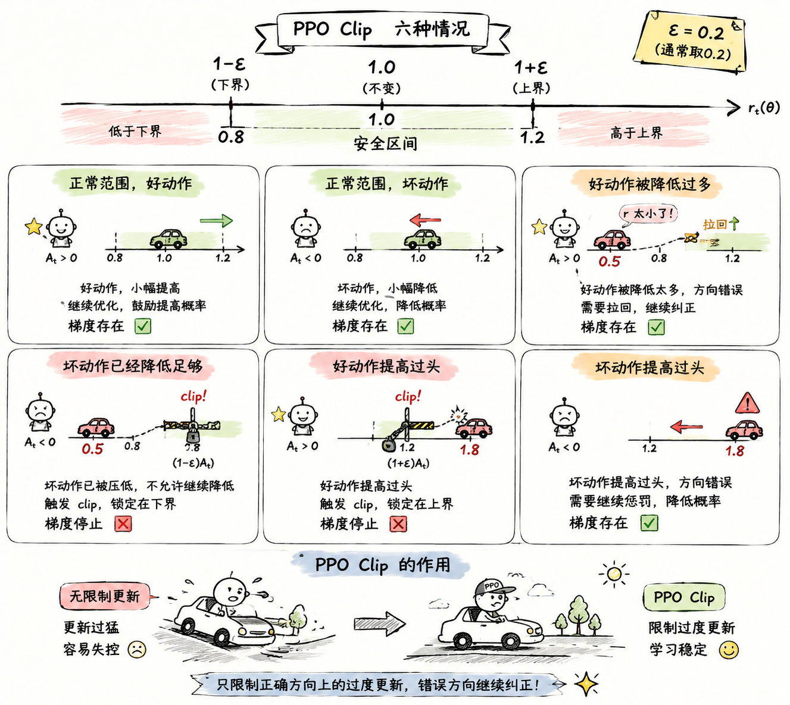
三、PPO 代码实现
1. 带裁剪的 PPO 算法伪代码
下图中，重要性采样比例 \(r(\theta)\) 用 \(p(\theta)\) 表示
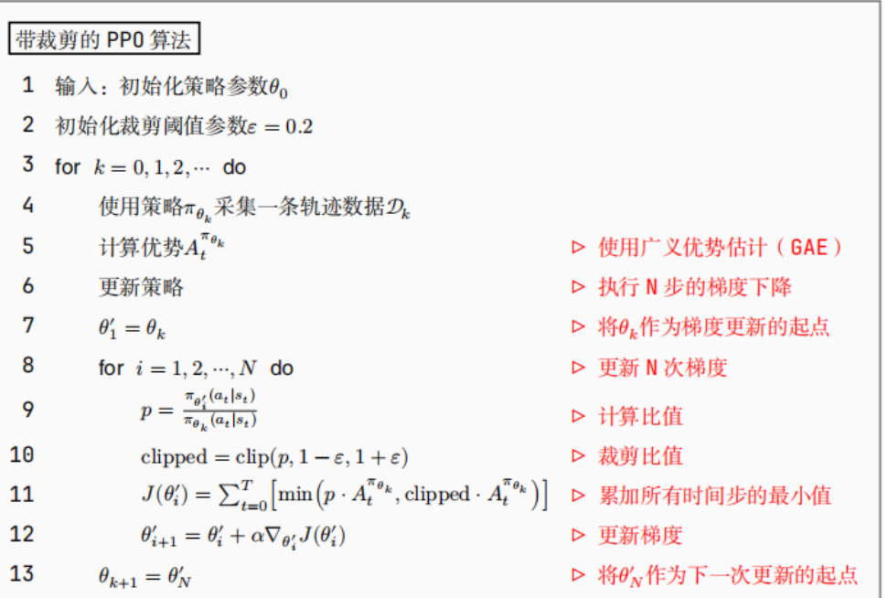
- 一条轨迹更新了 N 次梯度
- N 次循环，\(r(\theta)\) 的分母一直不变，这就是为什么 PPO 更新稳定的原因之一
2. 网络结构的定义
与 Actor-Critic 架构一样（本质上 PPO 采用的就是 Actor-Critic 架构），只不过换了优化目标。具体可参考：[[#四、代码实现]]
3. PPO 下的 Agent
# Agent
class Agent():
def __init__(self):
self.lr_pi = 0.0002
self.lr_v = 0.0005
self.gamma = 0.9
self.action_size = 2
self.pi = PolicyNet(self.action_size)
self.v = ValueNet()
self.optimizer_pi = torch.optim.Adam(self.pi.parameters(), lr=self.lr_pi)
self.optimizer_v = torch.optim.Adam(self.v.parameters(), lr=self.lr_v)
# 默认不带batch
def get_action(self, state):
probs = self.pi(torch.tensor(state).unsqueeze(0)).squeeze()
m = Categorical(probs)
action = m.sample().item()
# 返回动作和动作概率
return action, probs
def collect_trajectory(self, env):
state = env.reset() # s_0
done = False
states, next_states, actions, rewards, action_probs, dones = [], [], [], [], [], []
while not done:
action, probs = self.get_action(state)
next_state, reward, terminated, truncated, _ = env.step(action)
done = terminated or truncated
states.append(state) # s_t
next_states.append(next_state) # s_t+1
actions.append(action) # a_t
rewards.append(reward) # r_t
action_probs.append(probs[action]) # pi(a_t|s_t)
dones.append(done) # done_t
# 状态转移
state = next_state
return states, next_states, actions, rewards, action_probs, dones
重点看 collect_trajectory，为了后续 update 的计算，我们收集了一条轨迹的详细信息：
$$ \text{一条轨迹的详细信息} = \left{ \begin{array}{ll} \text{states}: & [s_0,s_1,\dots,s_{T-1}] \[6pt]
\text{next_states}: & [s_1,s_2,\dots,s_T] \[6pt]
\text{actions}: & [a_0,a_1,\dots,a_{T-1}] \[6pt]
\text{action_probs}: & [\pi_{\theta_{\mathrm{old}}}(a_0|s_0), \pi_{\theta_{\mathrm{old}}}(a_1|s_1), \dots, \pi_{\theta_{\mathrm{old}}}(a_{T-1}|s_{T-1})] \[6pt]
\text{rewards}: & [R_0,R_1,\dots,R_{T-1}] \[6pt]
\text{dones}: & [\mathrm{False},\mathrm{False},\dots,\mathrm{True}] \end{array} \right. $$
4. PPO 的实现
有了旧轨迹的详细信息，就可以实现 PPO 算法了
def Agent():
...
# ppo 的实现
def update(self, trajectory):
states, next_states, actions, rewards, action_probs, dones = trajectory
# [s0, s1, s2, ..., s_t-1] 形状变为 (batch_size, state_dim)
states = torch.tensor(states)
new_states = torch.tensor(next_states)
# 将动作、奖励、终止标志转换为 Tensor 并增加一个维度，方便后续批量计算
actions = torch.tensor(actions).view(-1, 1)
rewards = torch.tensor(rewards).view(-1, 1)
dones = torch.tensor(dones, dtype=torch.float32).view(-1, 1)
# 1. 计算 A（优势函数）A_t = r_t + y * V(s_t+1) - V(s_t)
# 为什么需要detach?（脱离计算图，不去计算梯度）
“”“
因为 V(s_t) 在这里仅仅作为一个“基准线(Baseline)”来计算优势 A_t。
如果不 detach，计算 A_t 时会保留 V(s_t) 的计算图，导致后续策略网络(Policy)的梯度错误地回传到价值网络(Value)中，破坏两个网络的独立更新。
”“”
V = self.v(states).detach()
# 2. 计算 TD Target (时序差分目标值)
# 公式：TD_target = r_t + gamma * V(s_{t+1}) * (1 - done)
# 如果 done=True，(1 - done) 为 0，截断后续奖励
td_target = rewards + self.gamma * self.v(new_states) * (1 - dones)
# 3. 计算 delta（单步td误差）
delta = td_target - V
# 4. 计算每一步的 GAE
“”“
AE 的递推公式包含一个从后往前的累加循环。PyTorch 的 Tensor 在 GPU 上进行这种带有强数据依赖的循环计算效率极低。因此，先将其转移到 CPU 并转为 NumPy 数组进行快速计算，算完后再转回 Tensor。
”“”
gae = self.compute_gae(self.gamma, delta.cpu())
# 5. 计算 r(theta) 的分母部分
old_probs = torch.tensor(action_probs).view(-1, 1)
# 虽然公式是相除，但是为了避免除零，这里用相减，所以求了一个 log 对数,然后再求指数，保证计算的稳定性
old_log_probs = torch.log(old_probs).detach()
# 更新策略网络 + 价值网络
# 对同一条轨迹进行多次 (Epoch) 梯度下降，提高样本利用率
for _ in range(10):
# 新策略采取的动作概率
log_probs = torch.log(self.pi(states).gather(1, actions))
# 计算重要性采样比率 (Ratio)
ratio = torch.exp(log_probs - old_log_probs)
# 计算 PPO 的截断代理目标函数 (Clipped Surrogate Objective)
surr1 = ratio * gae
surr2 = torch.clamp(ratio, 1 - self.epsilon, 1 + self.epsilon) * gae
# 策略网络的损失：每一步的贡献 min(surr1, surr2)
pi_loss = -torch.mean(torch.min(surr1, surr2))
# 价值神经网络的损失计算
mse_loss = torch.nn.MSELoss()
# 重点解释这个损失的计算
# ==================== 价值网络损失计算 ====================
# 【重点解释 v_loss 的计算】：
# 我们的目标是让价值网络 V(s) 逼近真实的累积回报。
# 在 PPO 中，GAE + V_old(s) 就是带有低方差估计的真实回报 (TD Target)。
# 因此，价值网络的 Loss 就是让当前的 V_new(s) 去拟合这个 TD Target。
v_loss = mse_loss(self.v(states), gae + V)
self.optimizer_pi.zero_grad()
self.optimizer_v.zero_grad()
pi_loss.backward()
v_loss.backward()
self.optimizer_pi.step()
self.optimizer_v.step()
5. 递推计算 GAE
在 GAE 章节下，我们给出了 \(A_{t}^{GAE}\) 的递推公式：
class Agent:
...
def compute_gae(self, gamma, delta):
delta = delta.cpu().detach().numpy()
gae_list = []
cur_gae = 0 # 当前时间步的GAE
lba = 0.95
for d in delta[::-1]:
cur_gae = cur_gae * gamma * lba + d
gae_list.append(cur_gae)
return torch.tensor(gae_list[::-1]).view(-1, 1)
6. 训练过程
def train(env, agent:Agent):
return_list, episode_list = [], []
for i in range(1000):
# 获取轨迹
trajectory = agent.collect_trajectory(env)
agent.update(trajectory)
# 统计信息
episode_return = sum(trajectory[3])
return_list.append(episode_return)
episode_list.append(i)
if i % 10 == 0:
print(f"episode: {i}, return: {episode_return}")
return return_list, episode_list
def main():
import gymnasium as gym
import matplotlib.pyplot as plt
env = gym.make("CartPole-v1") # 500 步结束的倒立摆游戏
agent = Agent()
return_list, episode_list = train(env, agent)
plt.plot(episode_list, return_list)
plt.title("PPO")
plt.show()
效果如下（倒立摆v1，也就是500步才算成功，比较难稳定,可能是因为我的训练回合数比较小，但是v0，通过ppo，几乎能够稳定完成游戏）
v1 版本（500步结束游戏）：
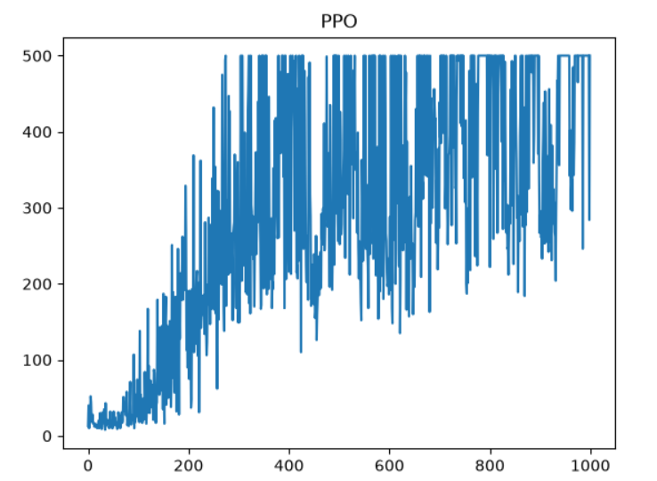
v0版本（200步结束游戏）：
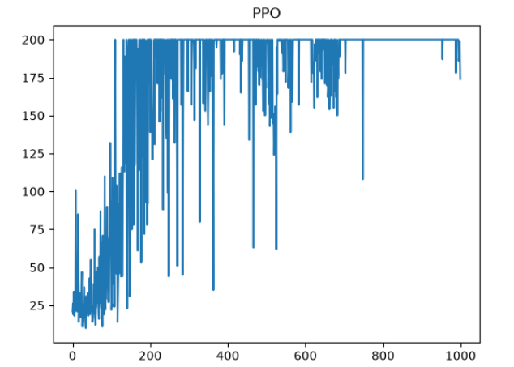
四、PPO 背后的数学
这一部分知识，我只能说路漫漫啊
KL 散度
KL 散度（Kullback-Leibler Divergence, KLD）是衡量两个概率分布之间差异程度的指标，在信息论中又称相对熵（Relative Entropy）。它的核心思想很直接：如果用分布 \(q\) 去近似真实分布 \(p\)，会损失多少信息？KL 散度量化了这个"损失"。
PPO 之所以依赖 KL 散度，是因为它需要在策略更新的每一步约束"新策略不能离旧策略太远"——KL 散度恰好提供了这种衡量手段。
1. 数学定义
给定两个概率分布 \(p(x)\) 和 \(q(x)\)，KL 散度有两种形式，取决于随机变量的类型：
定义 1 — 连续型随机变量
当 \(x\) 为连续型随机变量时： $$ D_{KL}(p \parallel q) = \int p(x) \log \frac{p(x)}{q(x)} \, dx $$
定义 2 — 离散型随机变量
当 \(x\) 为离散型随机变量时，求和代替积分： $$ D_{KL}(p \parallel q) = \sum_{x} p(x) \log \frac{p(x)}{q(x)} $$
两种形式的本质是一样的：用 \(p\) 作为权重，对 \(p\) 与 \(q\) 的比值取对数后求期望（或求和）。
2. 核心性质
| 性质 | 含义 | 数学表达 |
|---|---|---|
| 非负性 | KL 散度永远 \(\ge 0\)，不可能为负 | \(D_{KL}(p \parallel q) \ge 0\) |
| 同一性 | 两个分布完全相同时，KL 散度为 0 | \(D_{KL}(p \parallel q) = 0 \iff p = q\) |
| 非对称性 | \(D_{KL}(p \parallel q) \neq D_{KL}(q \parallel p)\)，方向不可交换 | 不是距离度量 |
非对称性意味着什么？
KL 散度不是"距离"（distance），因为它不满足对称性和三角不等式。\(D_{KL}(p \parallel q)\) 衡量的是"用 \(q\) 近似 \(p\) 时的信息损失"，方向反过来意义完全不同。在 PPO 中使用的通常是前向 KL \(D_{KL}(\pi_{\text{old}} \parallel \pi_{\text{new}})\)，即用新策略近似旧策略的损失。
3. 直观理解：抛硬币的例子
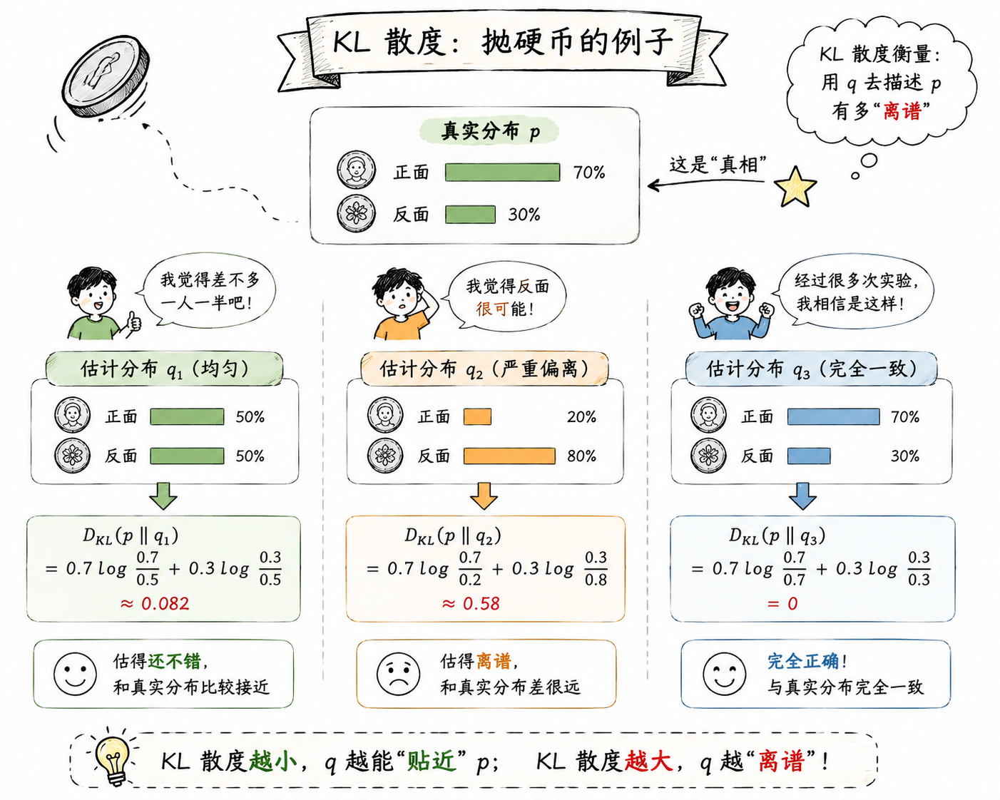
4. 为什么 PPO 需要 KL 散度 ⭐⭐⭐
PPO 的优化核心是：每步更新新策略 \(\pi_{\text{new}}\) 时，不能离旧策略 \(\pi_{\text{old}}\) 太远。如果一步更新过大，策略可能突然崩坏，导致训练不稳定。
KL 散度在这里扮演了"信任域约束"的角色：
意思是：在保证新旧策略的 KL 散度不超过某个阈值 \(\delta\) 的前提下，最大化期望回报。这比 TRPO 做精确约束计算量更小，比普通 Policy Gradient 更稳定。
KL 散度不是 PPO 的唯一约束手段
PPO 实际实现中通常使用 clipped surrogate objective（截断替代目标）来近似 KL 约束的效果，而不是真正每次计算 KL 散度。但在 PPO-kl 变体或 TRPO 中，KL 散度是显式约束。不论哪种形式，背后的"不要离旧策略太远"这个思想都来自 KL 散度。
RL GRPO ⭐⭐⭐
官方论文：DeepSeekMath: Pushing the Limits of Mathematical Reasoning in Open Language Models (arXiv:2402.03300) | DeepSeek-R1 技术报告 (arXiv:2501.12948)
一、GRPO 概览
1.1 是什么
GRPO（Group Relative Policy Optimization，组相对策略优化）是 PPO 的一个变体，核心差异是——去掉 Value Model（Critic），改用组内相对奖励来算 Advantage。
??? 为什么要去掉 Critic？ 当策略模型已经很大（7B+ 级别）时，再维持一个同等规模的 Value Model，训练的内存和算力几乎翻倍。PPO 的 GAE 虽然能有效降方差，但代价是庞大的 Critic 参数。GRPO 的做法更直接：对同一个 prompt 采样 \(G\) 条回复，把组内得分最高的定义为"好的方向"、最低的定义为"坏的方向"，以此驱动优化——不需要额外训一个值函数去估计绝对好坏
DeepSeekMath 最早用它做数学推理 RL，后来 DeepSeek-R1 / R1-Zero 大规模沿用了这一框架。
1.2 完整目标函数（一次性看清全貌）
GRPO 对每个 prompt \(q\)，先从旧策略 \(\pi_{\theta_{\rm old}}\) 采样一组 \(G\) 条输出 \(\{o_1, o_2, \ldots, o_G\}\)，然后优化目标：
好像现在工程上，一般不加后面 那个 KL 散度
其中 \(r_{i,t}(\theta) = \dfrac{\pi_\theta}{\pi_{\theta_{\rm old}}}\) 是概率比（importance sampling ratio），和 PPO 一模一样。
1.3 一句话理解 GRPO
对同一个问题，采一组回答 → 组内比好坏 → 推好答、拉差答。 本质是靠组内相对排序来近似"策略梯度应该往哪个方向走"，不再依赖一个单独的值函数。
这个 "组内相对" 的思路和 Reward Model 的训练方式天然一致——RM 也是给你同一 prompt 的多条回复做 pairwise 排序。GRPO 直接把这个对比信号用作 Advantage，逻辑上是自洽的。
二、GRPO vs PPO
GRPO 和 PPO 的根本差异只有两点，其他结构（on-policy、importance sampling ratio、clipped surrogate）都一样。
2.1 差异一：不需要 Value Network
PPO 是 Actor-Critic 架构，除了 Policy 还维护一个 Value Model \(V_\phi(s)\) 用来估计状态价值。GRPO 直接砍掉了 Value Model——认为对每个 prompt 采样一组回复，组内的相对排序已经能提供足够的梯度信号。
这是 GRPO 省显存、省算力的根源：Value Model 和 Policy 通常是同规模的大网络，去掉它训练开销几乎减半。
2.2 差异二：Advantage 计算方式不同
PPO 用 GAE（Generalized Advantage Estimation），基于 Value Model 输出的 \(V(s)\) 和 TD residual 算 Advantage，公式复杂，需要至少一个完整 trajectory 的 value 估计。
GRPO 直接用组内 reward 归一化作为 Advantage： $$ \hat{A}i = \frac{r_i - \mu $$ 没有 Value Model，也就没有 TD learning、没有 bootstrap——Advantage 完全来自同一 prompt 下的回复相互比较，简单直接。}}{\sigma_{{r}}
三、GRPO 组相对优势
3.1 为什么要 Advantage
策略梯度的核心公式是：
\(A(s,a)\) 表示"在状态 \(s\) 下采取动作 \(a\)，比平均好多少"。PPO 用 Value Model 估计这个"平均"（baseline = \(V(s)\)），GRPO 则用组内均值来替代。
3.2 GRPO 的 Advantage 计算
对同一个 prompt \(q\) 的 \(G\) 条回复 \(\{o_1, \ldots, o_G\}\)，每条通过 RM 或验证器得到一个 reward \(r_i\)：
其中 \(\mu_{\{r\}} = \frac{1}{G}\sum r_j\)，\(\sigma_{\{r\}} = \sqrt{\frac{1}{G}\sum (r_j - \mu)^2}\)。
如果支持 Process Supervision（过程奖励），每个 token 位置可以独立算一个相对 advantage；否则整条回复共享同一个最终 reward 归一化后的值作为所有 token 的 \(\hat{A}\)。
3.3 直觉解释
本质上，GRPO 用组内比较取代了 Value Model 对"绝对价值"的估计。好处是：
- 不需要训一个和 Policy 一样大的网络，省显存省算力
- 和 RM 训练方式同构——RM 也是做 pairwise 比较，组内归一化等价于把 pairwise 比较推广到 group-wise 标准化
- 方差控制好：同一 prompt 的采样天然共享上下文，组内 reward 的分布比全局 RM 分数更稳定
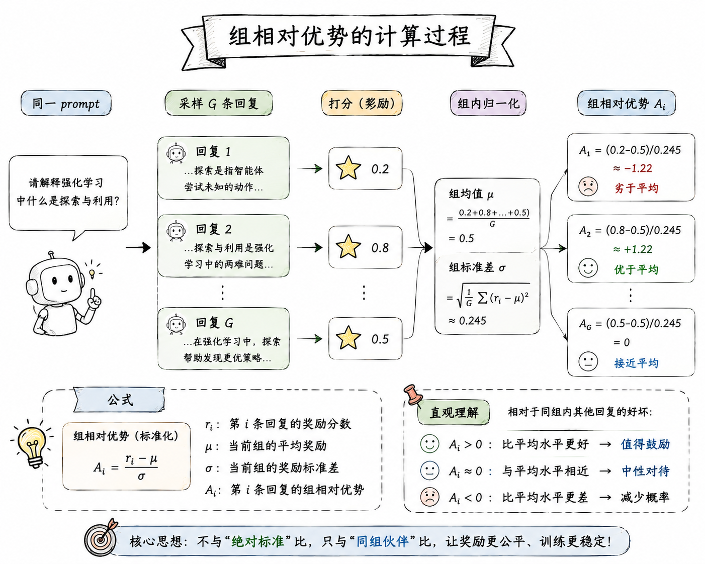
一个隐患
如果 reward 噪声大、或者组的采样不够多样（\(G\) 条回复质量相近），归一化后 \(\hat{A}\) 会趋于 0，梯度信号很弱。实践上 \(G\) 通常取 8–64，太小的 group 会让 advantage 的信噪比下降。
四、GRPO 代码实现
1. GRPO 网络结构
GRPO 不在需要价值网络来计算优势函数了，所以只有策略网络，策略网络与之前一致，这里不给了。
2、GRPO 下的 Agent
在 GRPO 下，Agent 需要收集完整的轨迹信息，然后还需要算出一组轨迹的组相对优势，同时还要：输入一组轨迹，更新策略网络！
class Agent():
def __init__(self):
self.action_size = 2
self.lr = 0.02
self.pi = PolicyNet(self.action_size)
self.optimizer = torch.optim.Adam(self.pi.parameters(), lr=self.lr)
# 没变化
def get_action(self, state):
# 获取动作概率分布
probs = self.pi(torch.tensor(state).unsqueeze(0)).squeeze()
# 采样
m = Categorical(probs)
action = m.sample().item()
return action, probs
# 比起 PPO，收集的信息少了不少，因为 GRPO 不在需要计算 TD ERROR 了，也不在需要价值网络了，只需要收集 si, ai, log(pi(ai | si)), total_reward(当前这条轨迹的回报)
def collect_trajectory(self, env):
state, _ = env.reset()
done = False
states, actions, rewards, action_probs = [], [], [], []
while not done:
action, probs = self.get_action(state)
next_state, reward, terminated, truncated, _ = env.step(action)
done = terminated or truncated
states.append(state)
actions.append(action)
rewards.append(reward)
log_prob = torch.log(probs[action])
action_probs.append(log_prob.item())
state = next_state
# 归一化奖励
episode_reward = sum(rewards) / 200.0
return states, action_probs, actions, episode_reward
# 输入一组轨迹，输出这组轨迹每个轨迹的组相对优势
def calc_advantage_with_grpo(self, trajectories):
# 1. 拿到这组里面每条轨迹的奖励 r_i
rewards = [t[3] for t in trajectories]
# 2. 计算均值和标准差
mean_reward = sum(rewards) / len(rewards)
std_reward = np.std(rewards)
# 3. 计算组内每条轨迹的组相对优势
advantage = [(r - mean_reward) / (std_reward + 1e-6) for r in rewards]
return advantage
3. GRPO 实现
重点介绍 GRPO 的实现，也就是 Agent 下的 Update 方法:
class Agent:
...
def update(self, trajectories):
# 1. 计算这组里面每条轨迹的组相对优势 Ai，之后每个时间步用到的优势函数都是它
advantages = self.calc_advantage_with_grpo(trajectories)
# 当前组要更新多少次策略网络，提高样本利用率
for step in range(3):
loss = 0.0
# 2. 计算当前组的损失
for traj, advantage in zip(trajectories, advantages):
states, log_old_prob, actions, _ = traj
# 获取动作概率分布
states = torch.tensor(states)
actions = torch.tensor(actions).view(-1, 1)
# 这里是重点，要保证 log_log_prob 和 new_log_prob 维度一致，防止 pytorch 自动广播，导致计算错误！（因为我一开始就错了，半天不收敛）
log_old_prob = torch.tensor(log_old_prob).view(-1, 1)
# actions 维度是 (t_len, 1)，所以 new_probs 的维度也是：(t_len, 1)
new_probs = self.pi(states).gather(1, actions)
log_new_probs = torch.log(new_probs)
# 2.1 计算重要新采样比率
ratio = torch.exp(log_new_probs - log_old_prob) # (t_len,1)
# 2.2 批量计算当前轨迹下所有时间步的损失，然后求平均值
traj_loss = -torch.mean(
torch.min(ratio * advantage, torch.clamp(ratio, 1 - 0.2, 1 + 0.2) * advantage)
)
# 2.3 加上这个轨迹的损失
loss += traj_loss
# 用当前组所有轨迹损失平均值来作为最终的损失
loss = loss / len(trajectories)
self.optimizer.zero_grad()
loss.backward()
self.optimizer.step()
return None
4. GRPO 训练过程
def train(agent, env):
G = 10
per_reward_list = []
# 训练10论
for i in range(100):
trajectories, rewards = [], []
for _ in range(G):
states, log_old_prob, actions, reward = agent.collect_trajectory(env)
trajectories.append((states, log_old_prob, actions, reward))
rewards.append(reward * 200.0)
agent.update(trajectories)
avg_reward = sum(rewards) / len(rewards)
per_reward_list.append(avg_reward)
print("trial_num:", i, "avg_reward:", avg_reward)
import matplotlib.pyplot as plt
plt.plot(np.arange(len(per_reward_list)), per_reward_list)
plt.title("GRPO")
plt.xlabel("episode")
plt.ylabel("reward")
plt.show()
def main():
import gymnasium as gym
env = gym.make("CartPole-v0")
agent = Agent()
train(agent, env)
效果图如下：
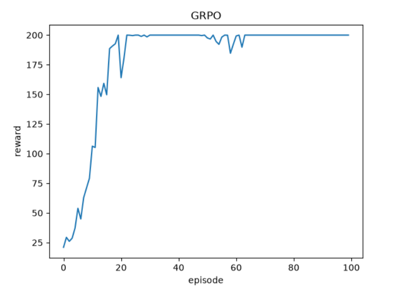
RL 原理总结 🚀🚀
终于学完了强化学习理论部分，说到底，核心就是两个算法——PPO 和 GRPO。只不过为了理解这俩，得先把策略梯度法原本的样子吃透。
策略梯度的骨架是这一个公式：
回顾整个章节，所有改进都能落到这个公式的左右两侧：
左侧 \(\phi\)（优势函数）的演进——核心问题是"怎么估这个动作比平均好多少"：
原始策略梯度 → REINFORCE → BASELINE → Actor-Critic → GAE
每一步都是对 \(\phi\) 的更精确估计：从整条轨迹回报（原始策略梯度）→ 累计回报 \(G_t\)（REINFORCE）→ 减去 baseline 降方差 → 引入 \(V(s)\) 做 bootstrap → 用 GAE 在偏差和方差之间取折中。这一路改进只改了 \(\phi\) 是什么，没动梯度怎么算。
右侧 \(\nabla_\theta \log \pi_\theta\)（更新机制）的演进——核心问题是"更新的步子多大才不崩"：
PPO → GRPO
PPO 引入了 clipped surrogate objective，把概率比 \(r_t(\theta)\) 限制在 \([1-\epsilon, 1+\epsilon]\) 内，防止单步更新过大。GRPO 在 PPO 的基础上，进一步把左侧的 \(\phi\) 从 GAE（依赖 Value Model）简化成了组内 reward 归一化——于是连 Value Model 都省了。
所以整章的知识链路就是一条线：
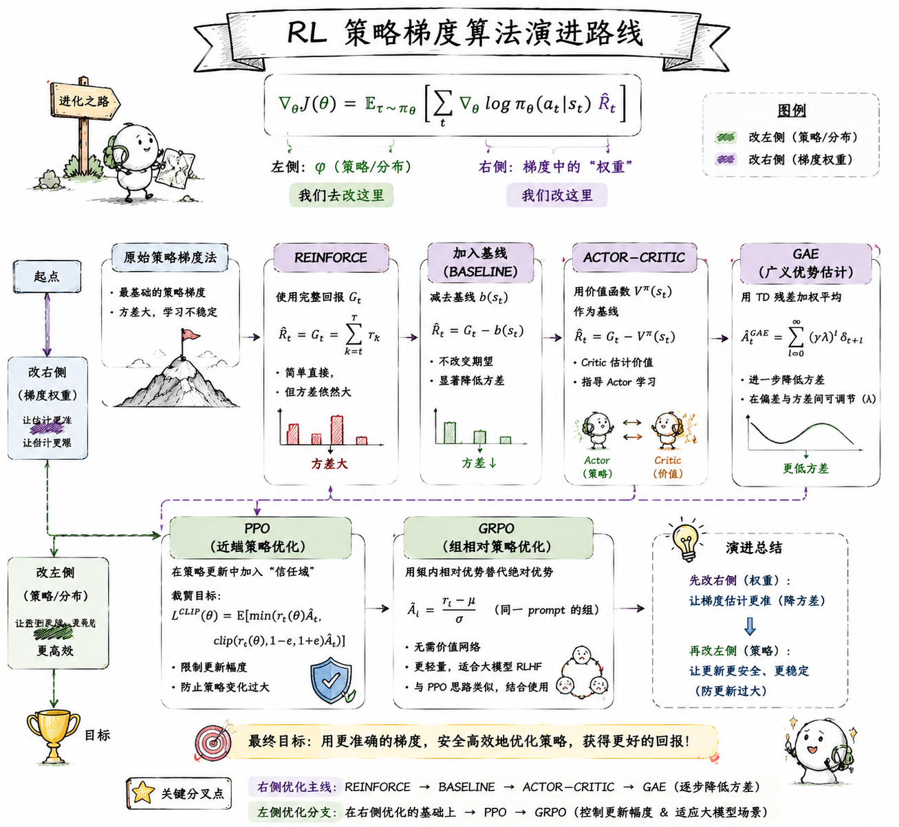
RLHF
RLHF 概述
RLHF（Reinforcement Learning from Human Feedback）就是用 RL 去做 LLM 对齐——语言模型不能只学"下一个 token 最可能是什么"，还得学"人类觉得什么回答好"。
Base LM 的预训练目标决定了它天然不关心有用性、诚实性、安全性。SFT 能教"好的回答长什么样"，但学不会"不该答什么"。RLHF 的思路是：不直接教，让模型试，然后告诉它好坏——RL 框架正好干这个。
RLHF 过程 ⭐⭐⭐
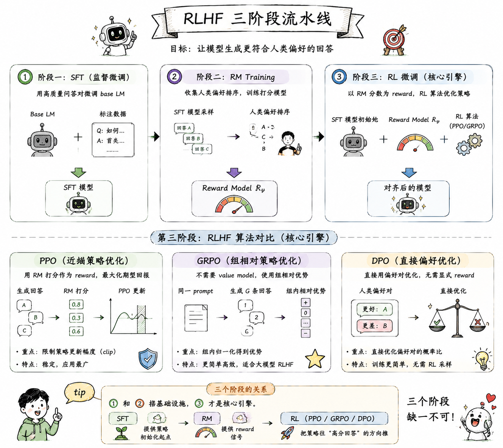
三个阶段的关系
① 和 ② 搭基础设施，③ 才是核心引擎。SFT 提供策略初始化起点，RM 提供 reward 信号，PPO/GRPO 把策略往"高分回答"方向推。三个阶段缺一不可。
第三阶段是整套流程的引擎。当前主流的 RLHF 算法有三个，核心差异在于"怎么用偏好数据驱动策略更新"：
RLHF 核心算法
1. PPO
PPO 的 clipped surrogate objective，用 GAE 算 Advantage + clipping 防步子太大：
需要 RM 提供 reward，需要 Value Model 算 GAE。经典 Actor-Critic 架构。
2. GRPO
GRPO 去掉了 Value Model，用组内 reward 归一化替代 GAE：
需要 RM 或可验证 reward，不需要 Value Model。省显存。
3. DPO
DPO（Direct Preference Optimization）更激进——跳过 Reward Model 和 RL 训练，直接用偏好数据优化策略：
其中 \(y_w\) 是人类偏好的回答，\(y_l\) 是人类不喜欢的回答。
把 LLM 映射到 RL 框架里，三者共享同一张映射表：
| RL 概念 | LLM 场景 |
|---|---|
| Policy \(\pi_\theta(a\|s)\) | LLM（生成 token 的概率分布） |
| State \(s\) | 已生成的 token 序列 |
| Action \(a\) | 下一个 token |
| Reward \(r\) | RM 对完整回复的打分（PPO/GRPO）/ 隐式奖励（DPO） |
只不过 DPO 不需要 RM，它的 reward 被隐式编码在 \(\beta \log \frac{\pi_\theta(y|x)}{\pi_{\text{ref}}(y|x)}\) 里。
RLHF Instruct Gpt
InstructGPT 的训练流程遵循标准的三个步骤，先去做微调，然后定义或者说是训练一个奖励模型，之后就是通过 RL 去对齐 LLM。
1. \(R_{t}\) 的计算
整个训练流程，最难的就是对于 LLM 来说，如何去得到即时奖励 \(R_t\) 呢？
PPO 的目标函数我们已经很熟悉了，优势 \(A\) 如果使用 1 步 TD 误差的话是 \(\delta_{t} = R_t + \gamma V(S_{t+1}) - V(S_t)\)。使用 GAE 的话，本质上也是计算 \(\delta_{t}\)
在倒立摆环境中，\(R_t\) 很简单——木杆不倒下就是 \(+1\)。但 LLM 里，策略每输出一个 token 就是一个动作，每个 token 该给多少即时奖励？ 奖励模型（RM）是对整条完整回复打分的，不是逐 token 打的。
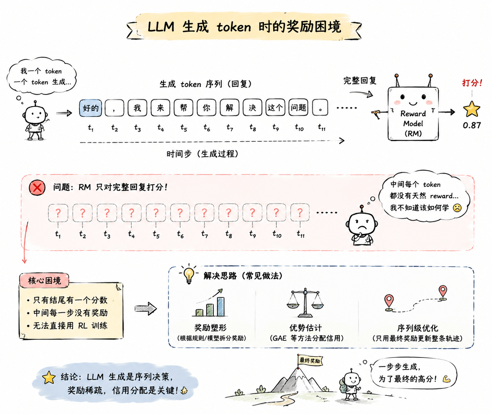
InstructGPT 的解法很精妙——奖励分两部分：KL 惩罚（每步都有） + RM 得分（只加在最后）。
中间 token（\(t < T\)）：句子没写完，RM 无法打分，只有 KL 惩罚：
最后一个 token（\(t = T\)，即 <eos>）：RM 看完了整句话，给出总分：
为什么需要 KL 惩罚
- 防止 Reward Hacking：没有 KL 约束，RL 模型会钻 RM 的漏洞，生成"看起来高分但实际上没法读"的乱码
- 保持语言流畅性：\(\pi_{\text{ref}}\)（SFT 模型）已经能说"人话"，KL 惩罚把 RL 模型锚定在 \(\pi_{\text{ref}}\) 附近，防止跑偏
中间 token 没有 RM 分数，梯度怎么传回去？
RM 的得分只在最后一步出现，属于稀疏奖励。PPO 靠它的 Critic + GAE 把信号沿着时间轴往前传：
- Critic（Value Model）会预测每个 token 位置的 \(V(S_t)\)，学到"虽然当前只有微小的 KL 惩罚，但顺着这个方向走，最后能拿到高分"
- 通过 GAE，最后一步的巨大奖励会沿时间轴向前传播，让前面的 token 也获得梯度
举个例子——假设 你好 是 prompt，模型生成 你好呀<eos>（4 个 token），\(\beta = 0.1\)，RM 打分 \(1.0\)：
| Token | \(R_t\) | 说明 |
|---|---|---|
| 你 | \(-0.1 \times \text{KL}(你)\) | 只有 KL |
| 好 | \(-0.1 \times \text{KL}(好)\) | 只有 KL |
| 呀 | \(-0.1 \times \text{KL}(呀)\) | 只有 KL |
<eos> |
\(-0.1 \times \text{KL}(\text{<eos>}) + 1.0\) | KL + RM 大奖 |
GAE 会把 \(\text{token}_4\) 的 \(+1.0\) 向前分摊给 token 1-3，告诉它们："你们铺垫得很好，导致最后结局很棒。"
稀疏 vs 稠密
RM 得分是稀疏奖励——只在结局出现一次。KL 惩罚是稠密奖励——每步都有，时刻约束模型不要乱说。两者配合，GAE 把稀疏的 RM 信号"抹匀"给每一步。
2. 微调 gpt2
代码如下，还是比较简单的，更多细节，参考 gpt2文档和 DataCollator
import torch
from torch.utils.data import DataLoader
from datasets import load_dataset
from transformers import (
AutoModelForCausalLM,
AutoTokenizer,
DataCollatorForLanguageModeling,
pipeline,
set_seed
)
from transformers import AutoTokenizer, AutoModelForCausalLM
# 加载模型和tokenizer， 同时为这个模型的分词器打一个补丁
model = AutoModelForCausalLM.from_pretrained("uer/gpt2-chinese-cluecorpussmall")
tokenizer = AutoTokenizer.from_pretrained("uer/gpt2-chinese-cluecorpussmall")
# 注意，这个模型词表里面没有 eos，所以用 pad 代替
tokenizer.eos_token = tokenizer.pad_token
# print(tokenizer.eos_token, tokenizer.pad_token)
ds = load_dataset('csv', data_files='./data/online_shopping_10_cats.csv')
# print(ds.column_names)
ds = ds['train']
ds = ds.filter(lambda x: x['review'] is not None and 10 <=len(x['review']) <= 1024)
ds = ds.select(range(6400))
def tokenize(batch):
return tokenizer(batch['review'])
map_kwargs = {
'batched': True,
'batch_size': 512,
'remove_columns': ['review', 'label', 'cat']
}
train_ds = ds.map(tokenize, **map_kwargs)
train_ds.set_format(type='torch')
print(train_ds.info)
# 由于不用 trainer，所以需要自己处理输入输出数据(trainer底层也是这样做的）
data_collator = DataCollatorForLanguageModeling(
tokenizer=tokenizer,
mlm=False
)
train_dataloader = DataLoader(
train_ds,
batch_size=4,
collate_fn=data_collator
)
optimizer = torch.optim.AdamW(model.parameters(), lr=5e-5)
num_epochs = 1
device = torch.device('cuda' if torch.cuda.is_available() else 'cpu')
model.to(device)
# 训练主流程
for epoch in range(num_epochs):
model.train()
for step, batch in enumerate(train_dataloader):
batch = batch.to(device)
outputs = model(**batch)
loss = outputs.loss
optimizer.zero_grad()
loss.backward()
optimizer.step()
if step % 100 == 0:
print(f'epoch: {epoch}, step: {step}, loss: {loss.item()}')
model.save_pretrained('./models/gpt2-sft')
tokenizer.save_pretrained('./models/gpt2-sft')
3. 奖励模型的训练
import torch
from torch import nn
from torch.utils.data import DataLoader
from datasets import load_dataset
from transformers import (
AutoTokenizer,
AutoModelForCausalLM,
DataCollatorWithPadding
)
# ================================
# 1. 加载基础语言模型
# ================================
model_path = "uer/gpt2-chinese-cluecorpussmall"
tokenizer = AutoTokenizer.from_pretrained(model_path)
# GPT2 默认没有 pad_token，使用 eos_token 作为 padding
tokentokenizer.eos_token = tokenizer.pad_token
# 使用句尾 eos 作为整个文本的 reward 位置
REWARD_TOKEN_ID = tokenizer.eos_token_id
# ================================
# 2. 加载情感数据集
# ================================
dataset = load_dataset(
"csv",
data_files="./data/online_shopping_10_cats.csv"
)
train_dataset = dataset["train"]
# 清洗数据：过滤掉空文本或超过 1024 长度的文本
train_dataset = train_dataset.filter(
lambda x: (
x["review"] is not None
and 0 < len(x["review"]) < 1024
)
)
# ================================
# 3. 数据 Tokenize
# ================================
def tokenize(batch: dict) -> dict:
"""
将原始文本转换为模型输入，并附加 Reward 相关标签。
输出字段:
input_ids: 词元序列
attention_mask: 注意力掩码
score: 原始情感标签 (1=正面, 0=负面)
score_index: reward 所在 token 的位置
"""
outputs = tokenizer(batch["review"])
batch_size = len(outputs["input_ids"])
# 初始化 reward 和位置信息
outputs["score"] = [0.0] * batch_size
outputs["score_index"] = [0] * batch_size
for i in range(batch_size):
# 在句尾添加 eos token 作为 reward token
outputs["input_ids"][i].append(REWARD_TOKEN_ID)
outputs["attention_mask"][i].append(1)
# 使用数据标签作为真实 reward
outputs["score"][i] = float(batch["label"][i])
# reward 来自最后一个 token
outputs["score_index"][i] = len(outputs["input_ids"][i]) - 1
return outputs
tokenized_dataset = train_dataset.map(
tokenize,
batched=True,
batch_size=512,
remove_columns=["cat", "label", "review"]
)
# 转为 PyTorch Tensor 格式
tokenized_dataset.set_format(type="torch")
# ================================
# 4. 定义 Reward Model
# ================================
class RewardModel(nn.Module):
def __init__(self, model_name: str):
super().__init__()
# 基础 LLM
self.llm = AutoModelForCausalLM.from_pretrained(model_name)
# Reward Head: hidden_size -> 1 (标量 reward)
self.reward_head = nn.Linear(self.llm.config.hidden_size, 1)
def forward(self, input_ids: torch.Tensor, attention_mask: torch.Tensor) -> torch.Tensor:
"""
前向传播，返回每个 token 对应的 reward。
"""
outputs = self.llm(
input_ids=input_ids,
attention_mask=attention_mask,
output_hidden_states=True
)
# 提取最后一层 Transformer 隐藏状态: [batch, seq_len, hidden]
hidden_states = outputs.hidden_states[-1]
# 通过线性层映射并压缩维度
reward = self.reward_head(hidden_states).squeeze(-1)
# 映射到 0~1 之间
return torch.sigmoid(reward)
model = RewardModel(model_path)
# ================================
# 5. DataLoader
# ================================
collator = DataCollatorWithPadding(tokenizer)
train_loader = DataLoader(
tokenized_dataset,
batch_size=16,
shuffle=True,
collate_fn=collator
)
# ================================
# 6. Reward Model 训练
# ================================
device = "cuda" if torch.cuda.is_available() else "cpu"
model.to(device)
optimizer = torch.optim.AdamW(model.parameters(), lr=1e-4)
criterion = nn.BCELoss() # 二分类损失
epochs = 1
for epoch in range(epochs):
model.train()
for batch in train_loader:
batch = {k: v.to(device) for k, v in batch.items()}
# 前向传播
scores = model(
input_ids=batch["input_ids"],
attention_mask=batch["attention_mask"]
) # shape: [batch_size, seq_len]
# 提取 reward token 位置的预测分数
batch_index = torch.arange(scores.shape[0], device=device)
reward = scores[batch_index, batch["score_index"]]
# 计算损失
target = batch["score"]
loss = criterion(reward, target)
# 反向传播与优化
optimizer.zero_grad()
loss.backward()
optimizer.step()
print(f"Epoch: {epoch + 1}, Loss: {loss.item():.4f}")
# 保存 Reward Model
torch.save(model.state_dict(), "reward_model.pt")